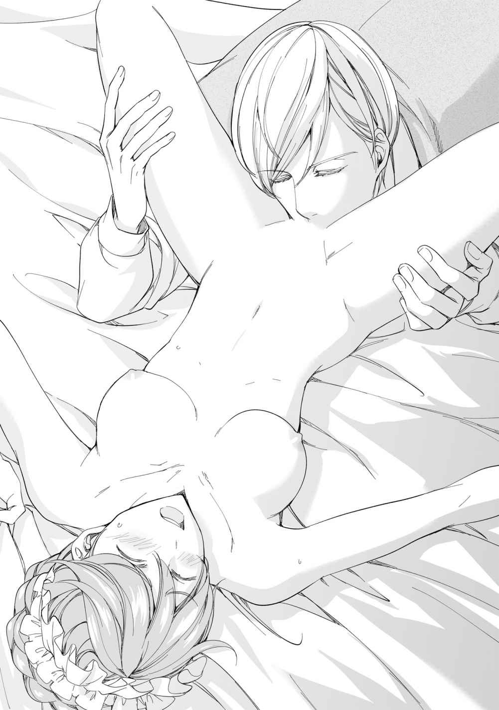
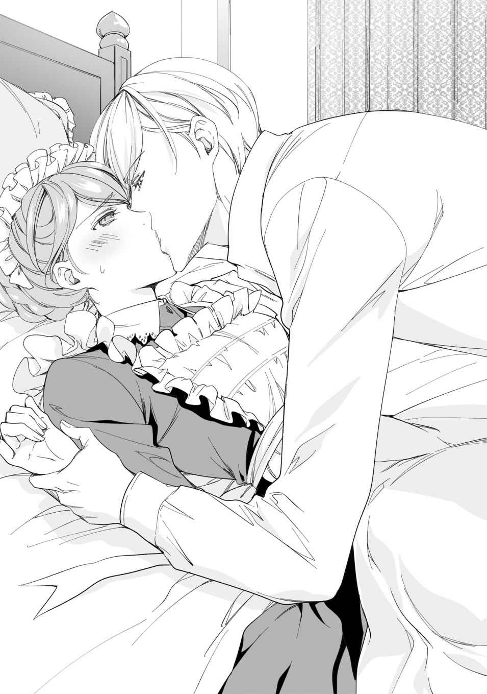
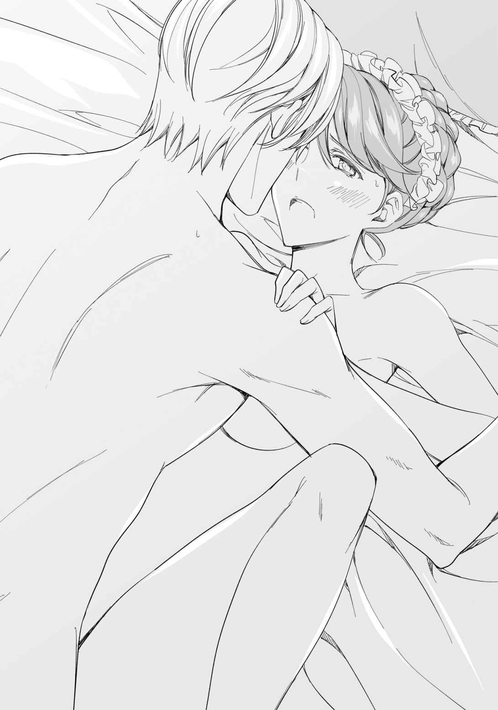
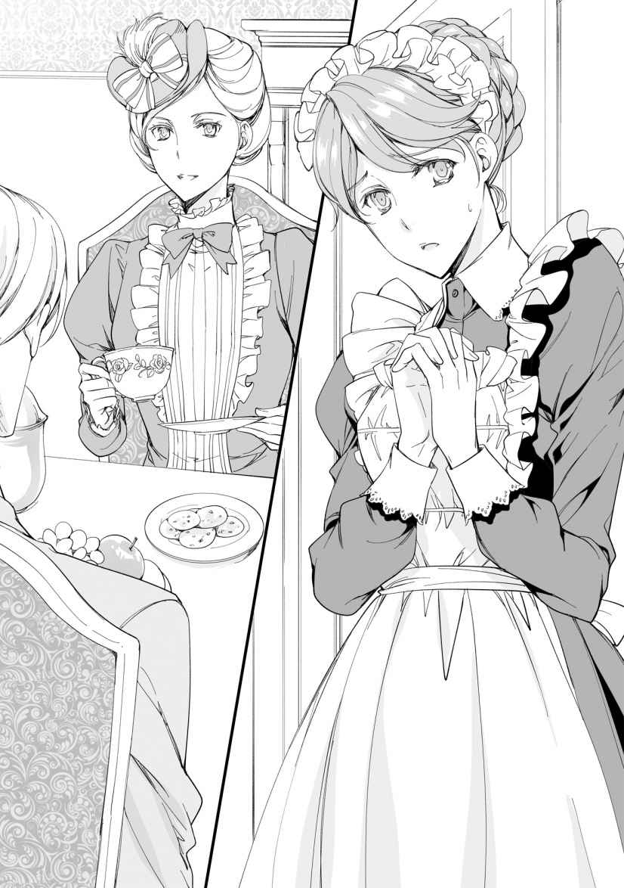
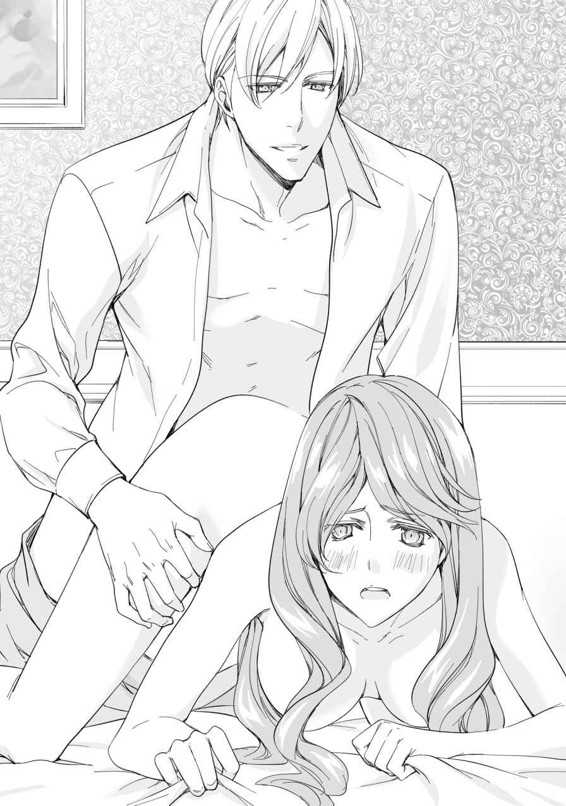
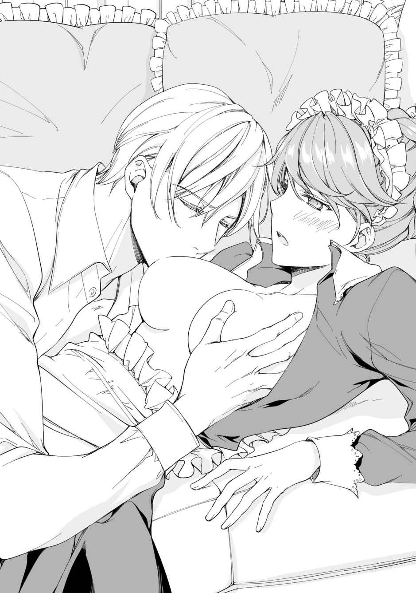
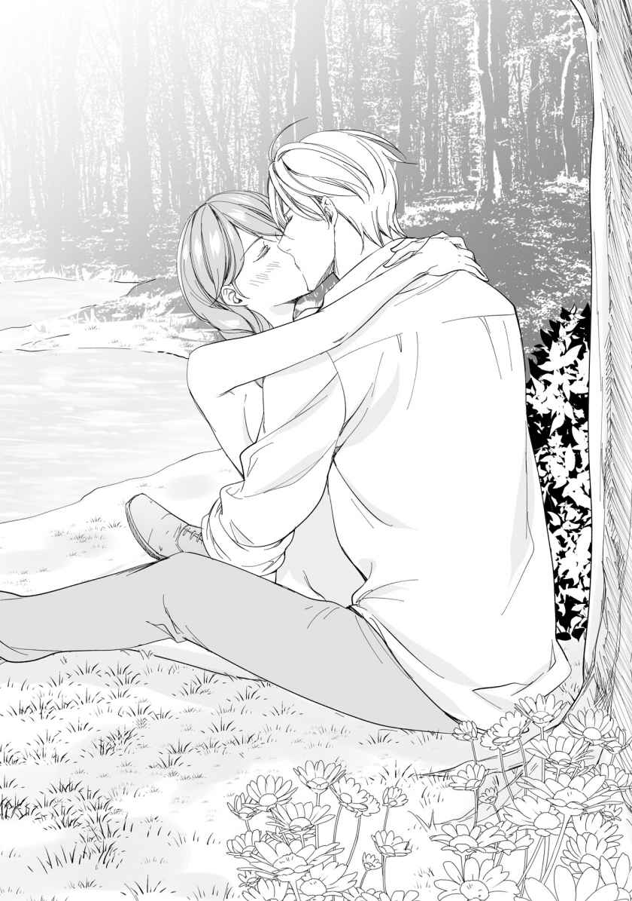
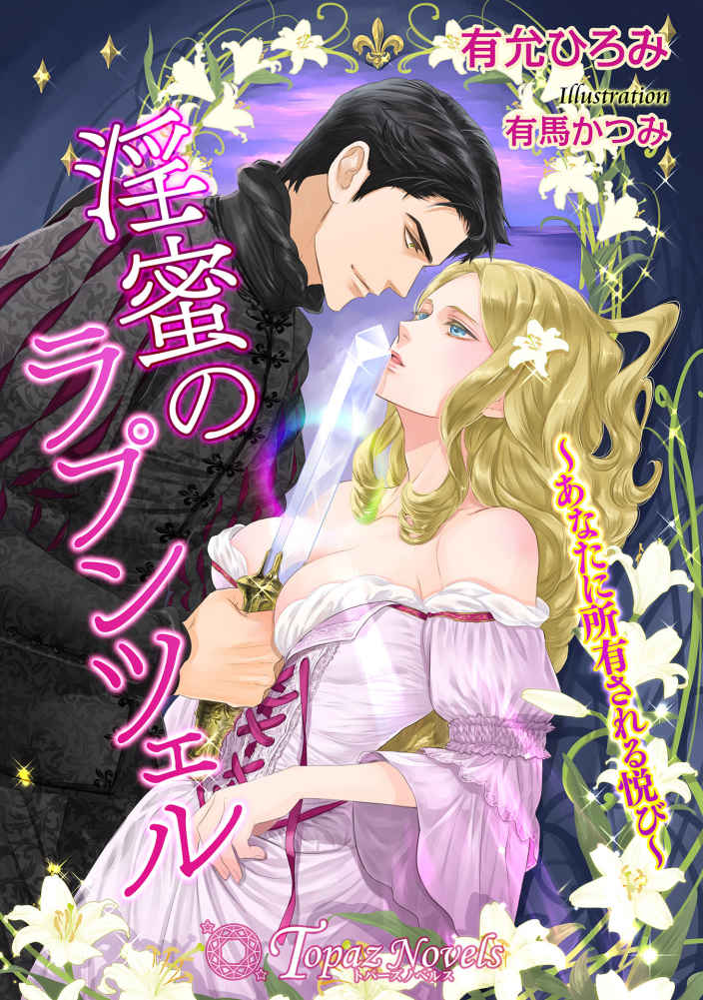

| Egoistic Viscount-メイドは子爵の求愛から逃げられない-【書下ろし・イラスト7枚入り】 (トパーズノベルス) | |
| 如月一花 | |
| アイデジタルパブリッシング (2017) | |
トパーズノベルス
Egoistic Viscount ～メイドは子爵の求愛から逃げられない～
著作 如月一花
Illustration ＯＤＥＫＯ
この物語はフィクションであり、実在の人物・団体・事件とは一切関係ありません。
Egoistic Viscount ～メイドは子爵の求愛から逃げられない～
淫靡な吐息を押し殺すように、メイドのディアナは必死に子爵のアルフォンスの背中に抱きついた。
さっきから執拗に蜜壺を指で抜き差しされ、何度も胸の中で果てさせられていた。
それでも許さないとばかりに、アルフォンスはディアナから漏れる吐息にじっと耳を傾けるように無言で蜜の溢れるところを続けて掻き回す。
息を荒げると、アルフォンスは「可愛いな」と目を細めて嬉しそうにする。
そんなことをされては余計に体は熱を帯びて、蜜が枯れてしまうこともなかった。
思わず吐息を漏らしてしまうと、アルフォンスが耳元で囁いた。
「我慢しないで欲しいな」
「......そういう問題、ではっ」
「でも、今は誘うように甘い息を吐いたろう？」
「それはっ」
何も言えずにディアナは黙りこんでしまう。
吐息ひとつにすら反応されては、声を出して喘ぐこともできない。
必死に堪えているものの、既に何度となく喘ぎ、息を求めて身を捩らせてしまっている。これではアルフォンスを求めているようでしかなく──彼からしてみれば、抵抗という言葉を忘れてしまったようにしか見えないのだろう。
考えているのも束の間、さらに粒を刺激されたディアナは背を仰け反らせて思わず喘いでしまった。
「はっああっ」
「ディアナ。素敵だ」
「そんなことは、ありまっせっ」
「そんなに抵抗しないでくれ」
「もうお止め、あっあっあっ」
「ディアナの敏感なところはここだろう？」
声も出せない程の快楽がゾクゾクと背筋を伝い、今にも頂きに上り詰めてしまいそうだ。
粒だけでなく、アルフォンスは乳房も丁寧に揉みしだき始めると、もうディアナは我慢できずに嬌声を上げてしまう。
「はっああっ！」
「我慢なんてしないで」
「ダメです、私はっ、メイド、ですっ！ あっあっ」
「そんなこと、どうでもいいだろう？」
「いけ、まっせっ」
必死に抵抗の言葉を紡ぐものの、敏感なところを同時に責められては息すらままならない。
おまけにアルフォンスに組み敷かれているものだから、体を捩らせて逃げようも、すぐに手は伸びてくる。
アルフォンスはとても優しい。
けれど、こうして子供のように言うことが聞けないのが子爵として恥ずかしいことだと城内でも有名だ。
戯れが過ぎる、大人になれ、そういう言葉で通じる相手ではないのはわかっている。
けれども、夜毎アルフォンスの相手をしなければならなくなるとは夢にも思っていなかった。
彼に秘密を握られてしまうまでは、そんなこと──。
「あっあっあっあっ」
とうとう頂きを昇り始めてしまうと、アルフォンスが指の抜き差しを開始した。
くちゅくちゅと卑猥な水音が部屋中に響き渡り、ディアナの心が乱れる。
「ほら、もう少しだろう？」
「ちっ違いっまっ、あっあっ」
アルフォンスは、うっとりと見つめてくる。
きっとはしたなく乱れ、淫靡な顔つきになってしまっているのだろう。
体の自由を奪われるような快楽は、ディアナには止めることができない。
自分ではどうしようもないくらいの快楽に突き抜かれ、幾度となく果てた体はろくに力も入りそうにない。
それなのにまた、果てそうになっている。
指の抜き差しはディアナが果てるまで続く。
体をくねらせ逃げても、アルフォンスの手から逃げることはできず、胸の突起を摘ままれてしまう。
さらに快楽を与えられ、とうとう息を荒げたディアナは膣がキュウキュウとアルフォンスの指を締め付け始めたことに気付いた。
「アルフォンス、さまっ」
「もう限界だろう？」
「そ、そんなことはっ。あっあっあああっ！」
抵抗したつもりが、突起をツンツンと軽く弾かれただけでディアナは果ててしまった。
アルフォンスはそんなディアナをそっと抱きしめ、頭を撫でる。
そして、額にキスを落とすと「好きだよ」と口にした。
「......アルフォンス様？」
朦朧とする意識の中、ディアナはそれがどういう意味であるかがわからなかった。
アルフォンスはディアナを抱き寄せ、キスを繰り返す。
もう限界だとディアナはキスを制すのだが、アルフォンスはお構いなしに、体のあちこちにキスを散りばめ始めた。
「ここは、まだとろとろだ」
「アルフォンス様っ」
何かと思えば、アルフォンスが蜜壺に顔を埋めて舐めていた。
甘い快感がまた呼び戻されて、ディアナは背を仰け反らせた。
部屋にはまた卑猥な水音が奏でられ始める。
「あっあっ。アルフォンスさまぁ」
「そんなにいいかい？」
「そうでは、ありま、せっ」
必死に押し戻そうと、無礼を承知でアルフォンスの頭を引き剥がそうとするが、アルフォンスは力ずくで茂みに割入ってくる。
舌先で蜜を舐め取られ、ツンツンと粒を刺激されればまた快楽が始まってしまう。

もうだめだと諦めつつも、ディアナは必死にアルフォンスに抵抗の言葉を浴びせる。
「いっいけませっ」
「そうは思っていないはずだよ？」
「ダメっ」
「本当かい？」
「もう、お許しくださいっ」
そう言うと、アルフォンスは口の周りを濡らす蜜を拭うと、猛ったものをディアナの蜜壺にあてがう。
アルフォンスは一言、「いいかな？」と訊くが、ディアナに拒否することなどできる筈もなかった。
アルフォンスはグラバー家の子爵。
そして、ディアナはそこで働くメイドなのだ。
コクリと頷くしかなく、そっとその様子を見つめることぐらいしか許されていない。
けれどもきっと嫌だといえば、それなりに気持ちを静めてくれるのだろう。
子供っぽいアルフォンスが優しく抱きしめてくれる意味は分からないが、この行為は単なる戯れにしか過ぎないはずだから。
それなのにどうして感じてしまうのだろうか。
ズルリと男根が入ると、優しく抽送が始まる。
慣れないディアナを気遣ってくれているかのようだった。
初めこそ痛みを伴ったが、何度か体を重ねるうちにその優しさは嬉しく、無下に抱かれているだけとは思えないと錯覚してしまう。
ましてや、好きだと言われてしまえば尚さら困惑するだけだ。
「痛くはないかい？」
「はい」
「ディアナの中は心地いい」
「お止めください」
アルフォンスの甘い囁きは、ディアナの心を切なく疼 かせた。
メイドという立場を忘れてしまいそうなほどに。
「ディアナの中に入るだけでも、もう充分だが、ついつい欲が出てしまう。ほら。こうして動くと──」
「やっあ。はっああっ」
ディアナはアルフォンスの太い首に腕を回して首をイヤイヤと振った。
「本当に感じやすいんだね。ディアナのそんな様を見たら、もう止められないだろう？」
「そんな。私は......。私は」
「ほら、少し動こうか」
そう言って腰を使い始めるアルフォンスにディアナは息を荒げた。
アルフォンスから滴り落ちる汗がディアナの頬を伝うが、ディアナは拭うこともできずにハアハアと息を荒げる。
最奥に到達すると、ズンと激しく突かれ、ディアナは思わず声を上げてアルフォンスにしがみつく。
「アルフォンス様っ」
「そんなに、いいかい？」
「ちがっうっ。ちがっ。はあっああっ！」
「もっと素直になってくれ、ディアナ」
「はあっんっんっ」
「そんなにも嬉しそうじゃないか」
「違うの、ですっ」
必死に言葉では否定するものの、快楽はディアナを完全に支配していて、会話すらままならない。
最奥を突かれ続けると、次第にディアナの蜜穴はアルフォンスのそれをがっちりと締め上げた。
苦しげな声を上げるアルフォンスは、ディアナを抱きしめ、キスを落とす。
「まだだ。まだ、中にいさせてくれ」
「アルフォンス様」
「まだ、まだ」
しかし、せわしない律動が始まり、ディアナもアルフォンスも息も絶え絶えに互いに抱き合うしかなくなってしまう。
ディアナの全ての神経がアルフォンスの吐息や視線、腹に集中する。そして、熱いものが爆発するのを感じると、ふたりとも息を弾ませた。
「ディアナ」
そう言って、ぐったりとしたディアナは抱き寄せられる。
「アルフォンス様」
「少し、休憩しよう」
「もう、お休みになりましょう」
「まだだ。まだ足りない」
そう言ったのも束の間、アルフォンスから規則正しい寝息が聞こえてきた。
そっと表情を伺えば、疲れて眠ってしまったようだった。
ディアナはそっとシーツを掛け、乱れた髪を整えた。
衣服を着てアルフォンスの部屋から抜け出す頃には、夜明けも近かった。
◇◇◇
厨房の隅で鋭い視線がメイド長のアリスから注がれ、ディアナは彼女の前で立ちつくすしかなかった。
アリスはディアナを睨み付けると、更に疑いの眼差しを強める。
しかしどうしたらいいのかわからず、只々身を竦ませるばかりだ。
そして何度目かの『なぜアレシア様の首飾りを盗んだ？』という問いにディアナはなぜそんなことを言われないといけないのかと、涙が溢れてきてしまった。
アリスは長年このマクベス邸に勤めていて、奥様やお嬢様のアレシアからの信頼も厚い。長年仕えているだけでなく、その忠誠心は周りのメイドより人一倍大きかった。
少し年季の入った黒のメイド服と結い上げられた髪の毛には、少しの白髪が混じる。
ふたりの間に沈黙は落ち、アリスの視線は痛い程ディアナに刺さる。
「ディアナ。アレシア様の首飾りを盗めばどうなるかぐらい、誰だってわかる筈。でもね、お嬢様はクビで済ますって仰ってるわ」
「クビ、ですか？ でも、私は──」
「ディアナ」
アリスの刺さるような視線を感じ流石にディアナは俯いた。
「でも、私はやっていません。ベッドの下から偶然出てきただけで」
「偶然で、お嬢様の首飾りが出てくるかしら」
その問いに、ディアナは黙るしかなかった。
ふっと光るものが足元に転がっていると思い拾い上げると、それは首飾りだったのだ。奥様かお嬢様、大奥様の物かもしれないと思い血の気が一気に引き、一晩は自分のもとに置き様子を伺った。しかし、首飾りがなくなったと騒ぐ様子もないので、ディアナはそっとアリスになら打ち明けてみようと、相談のつもりで首飾りを見せた。
ベッドの下に首飾りがあった、と。
きっといい解決策を練ってくれるだろうと思ったからだ。
でも、アリスはディアナの予想とは違い、血相を変えてアレシアの所へ向かい事情を説明したのだった。
アレシアの身の回りの世話はディアナがしていたが、アリスはアレシアの相談役でもある。それに、メイド長としては当然といえば当然の行動だ。
けれど、ディアナは盗んでいないのだ。
「ディアナ。早朝にはこの屋敷から出ていきなさい」
「でもっ」
「お嬢様がそれで許して下さるのよ？」
「私はやっていません」
「ディアナ」
宥められるように肩に手を置かれる。
アリスは真実を突き止めるつもりはなく、ディアナが盗んだと思い込んでいるようだ。
ディアナも何かの拍子に自分がアレシアの部屋から持ち帰ったかもしれないと、否定しきれずにいた。
もちろん、そんなことは万が一にもないはずなのだが。
だが、部屋にアレシアの首飾りがあるとするならば、着替えの際の不手際などを考えるしかないのだ。
そうは言っても、そういうものに触れるのは一瞬で、ずっしりと重厚なそれが自分の服に滑り込んだのならば気が付くはずだ。だから、そんなことは考え難い。
一番考えたくはないのは、誰かが故意に部屋に首飾りを置いたということだ。
でもそれは──。
アリスを見つめた。
睨むような視線を返され、咄嗟に逸らす。
そんな筈はない。
アリスは長年この屋敷に勤めるメイドであり、メイド長だ。
誰からの信頼も厚く、仕事にも熱心だ。
けれど、長年仕えているからこそアレシアの物をこっそりディアナの部屋に移動するくらいのことはできるとも考えられた。
けれど、なぜそんな汚名を着せようとするのかがわからない。
「わかりました。夜明け前にはここを出ます」
「そうしなさい。他の者には、急に実家に呼び戻されたとでも言っておくわ」
「すみません。ありがとうございます」
悔しくて、奥歯を噛む。
言いたいことは何一つ通じないし、もしもメイド長のアリスが企てたことならディアナには到底勝てる相手ではない。
けれど、何かが腑に落ちなかった。
ディアナはアリスの視線から逃れるように部屋を出て自室に飛び込んだ。
途端、涙が溢れてくる。
なぜ、こんなことになったんだろうか。
考えても無駄なことばかりがグルグルと頭の中を巡り、そして、しばらくは立つこともままならず、荷物をまとめることができたのは朝方だった。
なんとか人目を忍び屋敷から抜け出すと、ディアナは一番近い街まで涙を堪えて歩いた。
◇◇◇
しばらくは実家に帰ろうかと思うものの、メイドとして代々仕えていた屋敷を追い出され、汚名を着せられては帰っても厄介者だ。
かといって、ディアナにはメイド以外の仕事はできそうになかった。
取り柄らしいものもなく、勉強もしてこなかったからだ。
近代の風はすぐそこまで来ていて、女性も働く風潮はあるし、すでに働いている人もいる。けれど、それは爵位のない一般人の間でしかなかった。
ディアナに爵位はないが、今までメイドとして生きてきたことに誇りがある。
街は活気に溢れている。もしかしたら探せば働き場所も見つかるかもしれない。しかし、メイドとしてのプライドが他の仕事をするということを拒んだ。
ふらりふらりと街を歩き、その日眠るところだけでも探そうと必死に頭を回転させる。
そんなとき、ひとりの初老の男性とぶつかった。
「すみません」
頭を下げて通り過ぎようとすると、その男性に「大丈夫かい？」と肩を抱きかかえられる。
「顔色が良くない」
ふっと見上げると、心配そうに瞳を覗かれる。
どう答えるべきか悩んでいると、その男性の執事がそっとディアナに近寄ってきた。
「旦那様、お止めください。どういう素性の者かもわかりません」
「でも、今にも倒れそうじゃないか。放っておけない。君、名前は？」
ハッとして、ぼそりと「ディアナと申します」と伝えた。
お付きの執事が間に入ろうとしたが、初老の男性はそれを手で追いやる。
「どういう事情かはわからないが、少し事情を聞こうか。何か力になれるかもしれない」
途端、ディアナの目から涙が溢れ出た。
どうして見ず知らずの人がこんなにも優しいのだろう。
なぜ、あのときアリスはこの初老の男性と同じことを言ってくれなかったのだろう。
苦しい思いが胸を締め付ける。
アリスを信じていた。
メイド長だからだけじゃない。
その仕事ぶりも、時に見せる厳しさも尊敬できた。
なのに、どうしてだろう。
思い出せば出すほど涙がとめどもなく溢れて止まらない。
「そこに馬車が止めてある。中で聞こう」
「エドワード様！」
「何もないだろう。こんな泣き方が嘘泣きとでも？」
「いえ」
執事が一歩下がると、ディアナは抱えられるように馬車に乗り込んだ。
ビロード生地の座面は心地良かったが、ディアナはそんなことくらいでは泣き止むことができなかった。けれど、初老の紳士はじっとディアナを見つめ、治まるまで手を握ってくれていた。
「申しわけございません」
「いいんだよ。少しは気が済んだかい？」
「はい、ほんの少し」
ヒックとしゃくり上げると、ようやく初老の紳士の顔を見ることができた。
「私はエドワード・グラバー。隣町とその周辺の村を治めている。これでも子爵でね。何か力になれるかもしれない」
子爵。
そう聞いて、ドクンと胸が鳴った。
悲壮感で満ちていた心に一筋の光が指したような気がしたのだ。
メイドとして、なんとか働かせてもらえないか、こんな出会いをするのも何かの縁のような気がしてならない。
「あの、エドワード様。メイドは足りておりますか？」
「どういう意味だい？」
「メイドとして雇っていただけませんか？ どうか、お願い致します」
「何か理由があるようだが」
「エドワード様にだけはお話します」
そうして、自分の身に起きたことを包み隠さずディアナは話した。
ただ、メイド長のアリスを疑っているということは話さなかった。
話せば話す程、エドワードの眉間に皺が寄る。
「私は盗んではおりません。ただ、お嬢様の首飾りが部屋にあったのも事実なのです」
「もう充分だよ。今日から我が屋敷で働きなさい。人の手は多い方がいい」
「ですが！ 私のような前科がある者によいのでしょうか」
「私はこれでも見る目はあるつもりだし、話を聞いただけで前科者だと君を決めつけるのは早い気がする。そう考えただけだ。もしも身の回りでおかしなことがあれば、君を疑うこともあるかもしれないが、前科者だから疑うわけじゃない。屋敷の者を平等に扱う意味で疑う、そういう意味だ」
ディアナは考えを理解し、好意を受け取ろうとコクリと頷くと、エドワードは外に控えていた執事を呼んで馬車を出すように指示した。
道すがら、どこの屋敷で働いていたかとか、どういう仕事をしていたかとかを聞かれたが、ディアナはたどたどしく答えることしかできなかった。
今起きている偶然が信じられないのだ。
もしかしたら人買いかもしれない、そんなことすら考えてしまいエドワードを見つめるが、粗野な雰囲気は全くない品の良い話し方と、ディアナを気遣うような言葉を選んでくれている。
しばらくして、エドワードも黙ってしまうとディアナは眠ってしまった。
昨日からの緊張のせいだろう。
人生で初めて着せられた汚名と、行くあてもなく彷徨うかもしれない街は怖かった。
今になってその恐怖が疲れとなって押し寄せ眠りへと引きずり込んだ。
「ディアナ、起きなさい」
目を開けると、エドワードがポンポンと肩を叩いている。
「申しわけございません！ 居眠りなど」
「疲れたんだろう。今からメイド長のアマンダを呼ぶ。ディアナの事情は説明しない。あくまで、私だけの心に留めておく。君がこの屋敷に来た理由は人手不足だから、そういう理由にしよう。少々こじ付けだが、反論する理由もあるまい」
「本当に、何から何まで。申しわけございません」
ディアナは頭を深く下げた。
街で何ができるかもわからなかったし、メイドがいいと考えてはいたが、そんな都合よくいくはずもないと思っていた。誰かに買われてしまうかもしれなかったし、野垂れ死にしていたかもしれない。そう思うと、自分の願いがあっという間に叶ってしまったのは、恐いくらい幸運なことだった。
「ここでの仕事はメイド長のアマンダから指示を受けなさい。うちには娘がいないから、妻の世話を任されるかもしれない。代わりにいつまで経っても子供みたいな息子がひとりいるがね。じゃあ、頼んだよ」
「ありがとうございます」
また深く頭を下げると、ディアナは涙で目を滲ませた。
馬車から降りると、一緒に付き添っていた執事がそっとディアナに声を掛けてくる。
「わたくしも、この件に関しては何も言いません」
「ありがとうございます」
「エドワード様は、本当に寛大でお人柄も良く、人々からも慕われています。村の人々の声を聞き、古くからある伝統を守っていらっしゃいます」
「そのようですね」
馬車の中でエドワードがディアナに話したのは、村の祭りのことや収穫物のことだった。エドワードと奥様で祭りを陰ながら盛り上げ、いつも盛況に終わらせる。収穫物に至っても、余程荒れた天候でない限りは安定しているとのことだった。他にも沢山あるが、どれも素敵な話で、村人からも慕われているのだと感じて取れた。
その後執事は『カール』と名乗った。
利口そうな男で、ディアナのこともエドワードから大まかに聞けばすぐに理解し、街でのでき事は口を噤むと誓った。
「ディアナ。君の部屋に案内しよう」
「ありがとうございます」
こうして、ディアナはメイドとして再出発をすることができた。
玄関ホールを抜けたとき、ふっと若い男性と目が合った。
その気品から恐らくエドワードと関係あるだろうと感じ、会釈をする。
屋敷の主人が外出中に来客とは考えにくかった。
「カール。彼女は誰？」
「アルフォンス様。こちらはディアナと申します」
「ディアナか。新しく働くの？」
「左様です」
「ふーん」
そう言うと、アルフォンスはじっと見つめてくる。その瞳は吸い込まれるような青色でディアナは思わず視線を彷徨わせる。するとアルフォンスは子供のような無垢な笑顔を見せた。その純粋な笑みには、ディアナも思わず心を奪われてしまうほどだった。
「まだ、可愛い女の子なのかな？」
「アルフォンス様。そのようなことはそう軽々しく言わないようにしてください。エドワード様からも、注意をするようにと」
「わかっているよ。ただ、ちょっと見つめただけだろう？ パーティじゃ誰でもやってるじゃないか」
「ですが、メイドに向かっては」
「わかったよ。ディアナ。じゃあ、よろしく頼む」
そう言って、アルフォンスは正面階段を昇って行ってしまった。整った金髪は、ディアナの目を惹いた。ディアナの髪は赤茶色で、いかにも品がないのだ。丁寧にまとめているがコンプレックスでしかなく、せめて艶やかな黒い髪に産まれたかったと思ったくらいだ。
アルフォンスは瞳も髪も透き通った感じがして、美しいとすら思ってしまった。後ろ姿を見送っていると、カールが咳払いする。
「ディアナ。アルフォンス様はエドワード様と違って少し子供っぽいが、大切なひとり息子だ。しっかりしているところもある。最初はディアナにちょっかいを出すかもしれないから、何かあったら、すぐに私か、メイド長のアマンダに知らせなさい」
「わかりました」
「アルフォンス様は大人なのに、お遊びが過ぎるところがあるからね」
そう言うと、カールは地下に向かって階段を降りていった。彼に続いて長い廊下を歩いて行くと、抜けたところに食堂があった。そこには待機中のメイドが数名いた。
カールが手際よくディアナの自己紹介をすると、すぐに自室へと案内される。
皆の訝しい目はディアナにもわかり、カールが気を利かせてくれたことが嬉しかった。
そして部屋の前でカールは一言、ディアナに言った。
「私も詳しい事情はわからない。でも、ここグラバー邸にだって色々ある。気を付けて行動するように」
声を潜めて言うところから察するに、突然現れたディアナのことを暴こうとする輩もいると忠告してくれているんだろう。
メイドたちの眼差しは歓迎するような目ではなかった。
恐らく、人手は足りているのだろう。
それなのに新たにメイドが来たとなれば、不信に思うのも当たり前だ。
「ディアナ。今日はゆっくり休みなさい。明日から仕事をしてもらうから、そのつもりで」
「わかりました。ありがとうございます」
部屋にこもると不安が押し寄せてくる。
誰かに自分のことを嗅ぎ回られやしないか。
不信に思った仲間は意地悪をしたりしないか。
そう考えると、単純にメイドになりたいと思った自分は軽率だったと頭を抱えた。
けれど、そんなディアナを待つ暇もなく翌日から仕事は始まった。
◇◇◇
ディアナがアマンダの言いつけを守りながら銀食器を並べているときだった。
アルフォンスが突然現れた。
驚いたアマンダは、食事の時間にはまだ早いことを告げるが、アルフォンスはそんなことは関係ないとじっと入口に立ち尽くしてしまう。
「アルフォンス様ったら」
アマンダが横に来て思わず愚痴をこぼす。
そっとディアナがアルフォンスを見るとニコリと微笑み返され、その後もじっと見つめられてしまう。
その行動ひとつひとつに意味でもあるかのように、目を離さない。
驚いたディアナは、頬を染めてアマンダに言った。
「アルフォンス様は、いつもこうなのですか？」
「気まぐれな方というか。お優しいのだけれど。ちょっと子供じみたところがあるわ。きっと来たばかりのディアナが気になるのね。突然だったから」
「そう、ですか」
そういう視線だろうか？
またチラリと見つめるが、アルフォンスはまるで恋をするような熱っぽい視線をディアナに向けているのだ。
昨日、エントランスホールで顔を合わせただけだというのに。
そのときも少しからかわれたが、なぜまた？ と首を傾げる。
「ディアナ。ぼうっとしない」
「は、はい」
慌ててディアナは食器を並べた。
アルフォンスの視線など気にする暇はなく、初めて来た屋敷について覚えることは沢山あるのだ。
必死に仕事に集中しようとした瞬間、結い上げていた赤茶の髪の毛を撫でられていた。
ハッとして振り向けば、「気にするな」とアルフォンスは言う。
「ですがっ！ 今は仕事中です」
「綺麗な髪だな」
アルフォンスは初めて会ったときのような無垢な笑みを見せて、ディアナを惑わせる。髪の色はコンプレックスだっただけに、褒められるなんて思いもしなかった。
「お戯れが過ぎますっ」
「しかし、綺麗なのだから触れたいのは当然だろう？」
アルフォンスはまたそっとディアナに触れようとする。
すると、見ていたアマンダがアルフォンスをきつく睨んだ。
さすがのアルフォンスもそれには何も言えないらしく、ディアナから離れてバンケットルームの入口に佇む。
アマンダは小さなため息を吐くが、ディアナの心臓はトクトクと鳴っていた。
男性に触れられて胸が高鳴るなんてことは初めてだったし、髪のことを褒めてくれたアルフォンスを、ただ悪者にはできなかった。
翌日、その次の日も、アルフォンスはディアナに熱い視線を送ってくる。
そんなことを気にする暇もなく、ディアナは懸命にエドワードの恩に報いようと必死に働いた。
時折、カールやアマンダがアルフォンスに注意をするが無駄だった。
アマンダとカールは揃って、そんなアルフォンスを『子供っぽい』『今後が心配だ』と陰では言っていた。
そんな日が続き、ディアナが来て三カ月が経とうとしていた。
仕事には大分慣れたが、メイド達とはどことなく壁があるように感じていた。
というのも、ディアナは今までメイド長のアマンダがしていたグラバー夫人の着替えなどを代わりにやるなど、突然現れた割には信用されているかのようだったからだ。
そしてそれはディアナ自身も驚いていた。
ベッドメイクや朝ごはんの用意、屋敷の住人の目の付かないような仕事を任されるとばかり思っていたのに、突然の抜 擢 だった。
メイド長のアマンダも、ディアナに突然仕事を奪われ最初は心良く思っていなかったようだが、グラバー夫人に宥められ、ディアナもなんとかやっていた。
けれど、他のメイドからは不信がられ距離は縮まるどころか広がるばかりだった。
それに火に油を注ぐように、息子のアルフォンスからは毎日のように声を掛けられていた。
昨日もディナーを終えて帰るのかと思いきや、ディアナに近付き「綺麗な髪だね」とお世辞でもないことを言ったばかりだった。
そんな矢先の朝。
「エドワードが！ 誰か！ 誰か！」
グラバー夫人の震える悲鳴が屋敷中に響き、待機していたメイドと執事が慌てて寝室に駆けつけた。その声は明らかに異常だと知らせていて、無礼を承知で駆けつけたのだ。
そこで見たのは、安らかに眠るエドワードの姿だった。
「奥様？ もしや」
カールが震える声で夫人に訊くと、カールは腕を引かれて口元に手を当てさせられた。
瞬間、カールの顔から血の気が引き、よろめいた。
「大丈夫か」
慌ててクリフがカールを支え、同じように口元に手を添える。
そして、首を横に振った。
「エドワード様が、お亡くなりになった」
クリフが言った瞬間、グラバー夫人がわあっと泣き出した。それをアマンダが見かねて別室へと連れ出す。残ったメイドと執事で急いで医者を呼んだり、エドワードの薄く開いた口を閉じたりし、できる限りのことを皆でして回った。アルフォンスを呼びに行こうとカールが部屋から出ていこうとしたときだった。
「父さん」
立ち尽くすアルフォンスにカールは無礼のないように説明しようと、言葉を選ぶ。
「病死かと思われます。心臓を患っていましたので。エドワード様と私と奥様しか知りません。直 に医者が来ます。それまであちらで」
そのままカールはグラバー夫人のいるティールームに向かわせようと促すが振り払われてしまい、アルフォンスは涙で瞳を溢れさせながら、じっと拳を握り佇んでいた。
皆から子供っぽいと言われたアルフォンスだが、エドワードが亡くなっても気丈に涙を見せまいとしている姿は男性そのもので、まだ頼りなくとも子爵家に生まれ育ったのだなと思わせる。
この屋敷を継ぐのは、このアルフォンス。
いつかは継ぐとわかっていたことだが、誰もがまだ早い、結婚もしていない、少々遊びが過ぎる、と執事やメイドの中でも懸念の声は上がっていた。
けれど、そんなことは屋敷の主人が亡くなってしまえば関係ない。
もう、屋敷の主人はアルフォンスなのだ。
「カール。取り乱してすまない。母さんは？」
「お連れします」
「父さんに最近体調の変化は？」
「私の知る限り、何もございません」
「俺も元気だとばかり」
「考えるのは少し止めて、別室でお休みください」
「そうさせてもらう」
アルフォンスが部屋から消えると、カールは大きなため息を吐いた。そして、メイドと執事に細かな指示を与えていく。
エドワードが亡くなり、これからの屋敷主人はアルフォンスであることを、近隣の子爵に急いで伝えなければならなかった。
ディアナもアマンダのもとに駆けつけようと部屋を出ようとしたときだった。
腕を強く引かれた。
「まさかとは思うが、殺人じゃないよな？」
執事のクリフがディアナの耳元で囁いた。
カールと共にエドワードの身の回りの世話をしているが、ひと癖ある性格と嫌味が籠もる言葉にディアナは距離を置いていた。
「なんてことを言うんですか！」
「だってそうだろう？ ディアナが来て、この屋敷は色々と変わった。エドワード様に何か薬でも盛ったんじゃないか？」
「そんなことっ」
「でも、皆君が何かしていないかって思ってると思うけど」
そう言われ、働く他のメイドを見つめた。
必死に駆け回る姿しかないが、クリフの言葉のせいでまるでわざと忙しくしているようにも見えてしまう。
「エドワード様にそのようなことができる筈がありません！」
「ふーん」
クリフは何か考えてから、ディアナの様子を伺うとカールが指示した仕事に戻って行った。自分は何か余計なことを言っていないか、エドワードからの御恩を返せぬまま、なぜ亡くなってしまったのだろうか。
それにしても、クリフはこんなときによくも平然と。
『ここグラバー邸にだっていろいろある。気を付けて行動するように』
いつかカールが言ったことを思い出し、それはクリフのことではないかと忙しそうにするクリフを一瞬睨む。
けれど、普段の彼は仕事熱心だし、エドワードからの信頼も厚い。が、少々ずる賢い面があるとは思っていた。
エドワードの調度品を傷つけても名乗り出ず、しかもあろうことか人のせいにしたのは、最近のことだ。
結局、エドワードに見破られてクリフは謝罪したが、エドワードはそんなクリフをそれでもクビにすることはなかった。
その夜からしばらくはエドワードの葬儀に追われ、アルフォンスはそれが終わると新しい子爵となった。
◇◇◇
満月がとても綺麗な夜だった。
ディアナは裏庭でひとり月を見ていた。
たまにカールが現れてふたりで話すこともあるが、滅多に人は来ない。
そのせいか、ディアナはここをひどく気に入っていた。
大きなため息を吐く。
もう、エドワードはいない。
あの街で偶然拾われて、何ができたろう。
「満月だな」
突然の声に振り向けば、アルフォンスがいる。
どうして裏庭なんかにと驚いて声も出せずにいると、すとんと隣に座られてしまう。
「色々と、ディアナとは話しておきたいと思っていたんだ」
「何をです？」
嫌な予感がしてきて思わず胸元を抑える。
ごくりと生唾を飲むと「何をそんなに身構える必要がある？」とあっけらかんと言ってアルフォンスは優しく笑顔を見せてくる。
「遺言ってわけじゃないけれど。父さんから事情を聞いているよ」
「なんの話です？」
血の気がすっと引き、アルフォンスの隣が居辛くなってくる。
それでも平静を装いつつアルフォンスの様子を伺う。しかし、アルフォンスは月を見つめるものの、どこか辛そうに見える。
なぜそんな顔をするのだろうとじっとディアナは見つめるが、答えは出なかった。
「街で父さんに拾われたんだってね」
その一言に、ドクンと胸は大きく鳴り、止まるんじゃないかと思うほど息は苦しくなった。
アルフォンスの手がディアナの髪に触れる。
払い退けることもできず、触れてくる意味も検討がつかず、心の中で不安だけが渦巻いていた。
「なんの話でしょうか」
「とぼける必要はないよ。父さんは俺にディアナは無実だって言っていたし」
「止めてください！」
突然思い出させられた嫌な記憶に、思わず声を上げアルフォンスと距離を取るディアナ。
アルフォンスは切なそうな表情を一瞬見せてから、また月を眺めた。
「申しわけございません。ですが、その話は」
「わかっているよ。父さんは俺にしか話していない」
「私はクビですか」
「まさか。少し、部屋で眠る手伝いをして欲しいんだよ。これだけ色々なことがあって、最近眠れていないんだ」
「え？」
その問いに何も言えず、アルフォンスの瞳を見つめた。けれど透き通った青は闇に紛れ、真意は見えない。
アルフォンスの部屋に入れるのは執事のカールだけだ。
クリフもアルフォンスの部屋に入ることは許されてはいるが、アルフォンスはあまりクリフを良く思っておらず、仕事を頼むのはもっぱらカールだった。
決まりとしては、アルフォンスの部屋に入れるのはそのふたりだけで、アマンダも急用でもない限りは入ることを許されていなかったというのに、ディアナ程度のメイドが、部屋に入っていいわけがないのだ。
ましてや、眠るためになどという理由で入室することがバレたら、メイド長のアマンダやカールから怒りを買う。いや、怒りを買う程度で済めばまだいい。
最悪の場合はこの屋敷を追い出されてしまうかもしれないのだ。
「できませんっ！ そんなことが許される筈がないでしょう」
「少し眠るときに傍にいてくれればいいんだ。それとも、明日の朝食に遅れてもいいのかい？」
「そんな理由......」
困り果てて言葉を詰まらせると、アルフォンスはディアナの口元を指でそっとなぞった。
何事かと逃げようとすると、アルフォンスは微笑む。
「ディアナの秘密を口外しても？」
その瞳が月明かりに照らされてて、透き通ったブルーの瞳が現れる。
ディアナは吸い込まれてしまうような錯覚を受けつつ、自分が脅されているのだとはっきりと自覚した。
「脅し、ですか」
「違うよ。そんな物騒なことじゃない。でも、ディアナがそう感じるのなら、そう受け取ってくれて構わないよ」
言われて、ディアナは黙り込んだ。
アルフォンスは明るく気さくで、誰にも分け隔てなく接することができる、父親譲りの優しさも兼ね備えていた。けれど、子供じみたところは抜けない、それだけが問題だと皆が嘆いていたが、ここのところはそんな様子も見なかったせいか、アルフォンスは成長したのだと誰もが思っていただろう。ディアナだって、立派になったと思っていた。
けれど、中身は未だ子供じみたことを言う幼さが残ったままだった。
そして、そんな彼から脅しとも取れることを言われている。
下手なことを言えば、屋敷中にディアナの罪がバラされてしまう恐れがある。
ディアナはスカートの裾を握りしめ、意を決してアルフォンスに言った。
「わかりました」
低い声で、決して従いたくはないと強調した。
眠れないというのは口実に過ぎない、そう考えるが妥当だ。
何かを企んでいるのだろうが、今はこの屋敷主人のアルフォンスに従うしかない。
「じゃあ、早速部屋に来て欲しい。今なら誰も階段を通る者もいない」
手を引かれてディアナは体を強張らせた。
何が待っているのか予想もできないし、自分は何をさせられるのかも想像できない。
しかも、すぐに部屋に返してくれるかだってわからない。
階段を駆け上がり、廊下の一番奥のアルフォンスの部屋に急ぐ。
ドアを閉めるなり、ほっと互いに息を吐いた。
「こんな高揚した気分、久しぶりだ。じゃあ、俺はベッドに入るからディアナも一緒に」
「何を仰っているんです!? 」
「別に、君の話を聞きたいだけだよ。手は出さない。それとも、何か期待でもしていた？」
かあっと頬が熱くなり、アルフォンスの視線から逃げるようにディアナは背を向けた。
アルフォンスはクスリと笑うと、さっさとベッドに潜り込んでしまう。ディアナはどうしたらいいだろうと考えながらも、ここで引き返すわけにもいかないと、そっとベッドに入った。
これはアルフォンス様からの言いつけ。
そう言い聞かせなければ、手足はブルブルと震えてしまいそうだった。
やっとベッドに入るも、横たわることもできずに座ってアルフォンスの横で固まっていると、アルフォンスはディアナの髪に触れキスをした。
ディアナはさらに体を硬直させ、心臓をバクバクと高鳴らせる。
「本当に綺麗な髪だ。何度も触れたい。こんな無理なことを言って悪かったね。屋敷の主から言われたらディアナだって断れないと思ったんだ。かなり強引とは思ったんだけれど」
強引な命令だからこそ、その全てが怖いのだ。
そう言い返したいのに、ディアナの口はカラカラに渇いてしまう。
「ディアナ。前の屋敷では苦労はあったかい？」
「いえ。楽しく働かせて頂いておりました」
「そうか。ここでは？ 仕事は楽しい？」
「はい、グラバー夫人のお世話をさせて頂くなど、やりがいを感じます」
「母さんは、ディアナのことを気に入っていると思うよ。俺と同じように」
そう言うと、ディアナは唇を塞がれた。
あまりのことに何がなんだかわからない。
「ディアナ」
熱を帯びた言葉は、確実に自分に向けられていた。
でもそれがなぜなのかがわからず、ディアナは必死に抵抗をした。
「キスをしないと眠れそうもない」
「そういうことは、奥様を見つけてからしてください！」
「別に、遊びじゃない」
言われて、さらに深いキスをされる。
「んっ」

舌を絡め取られ、ディアナは思わず吐息を漏らした。アルフォンスはディアナを横たえると、口内を丁寧にねぶる。
体が蹂躙されてしまうと思うと思考は停止していた。
「ディアナ」
耳元で囁かれて、ハッとした。
「この先を、僕は望んでいる。でも、ディアナの秘密との交換条件で続けようとは思わない」
「どうして」
「大切にしたいからだ」
なぜ？
屋敷主人がメイドに手を出すなんてことは、よくある話だ。
体を好きに弄び、好きなように扱われると予感はあった。秘密を握られた相手がアルフォンスなら、そういう考えに行きつくのは当然だとも思えたのだ。
でも、キスこそ強引だったけれど、その先は同意を得てということ？
「好きでもない男に抱かれたくはない？」
ディアナは首を振った。
「じゃあ、俺を好きなの？」
「アルフォンス様を好きなんて、考えたこともありません。それに、自分の体を触れさせるのも、まだ経験が......。それにアルフォンス様とそのようなことをすれば、私はこの屋敷にはいられなくなります。どうか、お許しください」
わっと出てきた言葉は、全てが本音だった。
寝るための口実として体を捧げろと言われても、ディアナはまだ処女でアルフォンスは屋敷の主人だ。体の関係があると周りに知られればどうなるか。
考えただけでも背筋はぞっとする。
けれど、アルフォンスはそんなディアナの気持ちを踏みにじるような言葉を放った。
「強引な手は使いたくはなかったけれど。君を抱きたいという感情をこんな状況で抑えていられる自信はない」
「なっなにを!? 」
見下ろすように組み敷かれると、唇を塞がれた。
舌先はディアナの口内をねぶり、腕はするりとスカートを捲り上げる。
「やっ。アルフォンス様っ」
「嫌われる覚悟はできている」
どうして、なんでなの、と疑問に思う間に下肢にはジワジワと甘い刺激が加えられていく。
下着を剝がされて、すぐに蜜壺を掻き回されるとディアナは吐息を荒くし、背を仰け反らせた。
「あっあああっ」
「ディアナ」
うっとりとした眼差しを感じ、ますますディアナは困惑する。けれどそんな悠長に考えている暇もなく、卑しい水音はくちゅくちゅと部屋中に響き、ディアナの耳を刺激し心を蹂躙する。
なんて、はしたない。
そう思って逃げるように体をくねらせると、アルフォンスは嬉しそうに吐息を漏らす。そして、さらに刺激が強い粒を捏ねくり回されてしまう。
「あっやっああ」
「こんな声を出すんだね。いつも真剣な顔をしているから、わからないな」
「アルフォンス様。もうお止めください」
「こんなところで止めたら、こっちがどうにかなりそうだ。いや、それとも、続きは明日ということにしようか」
アルフォンスは真剣な表情でディアナに問う。
何を言うのだろうとアルフォンスを見つめる。けれどそのブルーの瞳は熱っぽく嬉しそうにディアナを見つめるだけだ。
しかも、愛情のようなものすら感じる。
なぜ？
わからないでいると、粒を甘く刺激され、ディアナは大きく体を仰け反らせて大きく喘いだ。
「気持ちよかったかい？」
ディアナは無言で目を合わせることもできなかった。
本来なら、何かしら言わないと失礼にあたる。
けれど、こんな乱れた状態とよくわからないことを受け入れ、気持ちよかったかと訊かれて、素直に自分の気持ちを言える筈がない。
乱れた衣服をすぐに整えようとすると、下肢には溢れ出た蜜が滴っていた。
思わず固まると、アルフォンスはそれを指で拭い、ペロリと舐め取ってしまう。
「アルフォンス様っ。何をっ」
「何って、ディアナの深い部分から溢れてきたモノを舐めただけだよ。いけないかい？」
「良い悪いの問題ではありません」
「ディアナ。恥ずかしいか？」
言われて、カアッと頬が染まる。
努めてメイドとして振る舞っていなければ、逃げ出してしまいたいくらいなのだ。
それをなんとか堪え、冷静にアルフォンスの前から立ち去ろうと懸命なのだ。
それなのにアルフォンスはディアナを冷めやまぬ熱っぽい瞳で見つめてくる。
「ディアナ。キスをもう一度いい？」
「ダメです」
「そうしないと、眠れそうもないな」
「わかりました。眠るまで傍にいます」
「傍にいるよりも、キスがしたい」
ふっと頭の後ろに手が回り唇に温もりを感じる。
触れるような優しいキスから、また深いキスへと繋がるとディアナはすぐに吐息を乱れさせた。
それを察知したアルフォンスはディアナから離れると、頭をそっと撫でてくる。
ディアナは一言断ってからベッドから降りると、アルフォンスを見つめた。
「もう眠れますか？」
「いや、まだ。ディアナ。明日から夜は俺の部屋に来ると約束してくれないか」
「そんなこと！」
ディアナは自分の卑猥な吐息が脳裏によぎったが、必死にかき消してアルフォンスに抗議しようとした。けれど、アルフォンスは「もう引き返せないだろう？」と弱みをふたつも握っていることをちらつかせてきて、引き下がる選択を強いてくる。
「大丈夫。誰にもバレやしない」
「そういう問題では」
ディアナが恐れているのは、明日にでも体を蹂躙されてしまうのではということだ。
今日だって、キスだけで終わるのが不思議なくらいなのだ。
アルフォンスが欲求不満なら、壊れるぐらいに抱かれてしまうのだろうと覚悟していたのに、それどころか優しく焦らされている。
「明日来るって約束してくれるかい？」
ディアナは頷いた。
こうするしか方法がないのだ。
アルフォンスはディアナに微笑み掛けると、ベッドに潜り込んで「おやすみ」と言って手を振った。
「眠れそうだよ」
「失礼します」
ディアナは逃げるようにアルフォンスの部屋から抜け出した。部屋から抜け出すところを誰かに見られていないかヒヤヒヤしたが、幸いなことに人気はなく、大丈夫なようだった。
翌日の夜半。
ディアナはベッドで濃密なキスをされていた。
「んっふう」
「今日は続きをしよう」
唾液が互いに混ざり合う程のキスに、ディアナの冷静さは奪われていた。
昨晩もたらされた快楽も、ディアナを甘く刺激しているかもしれない。
あの先には何が待っているんだろう。
この後にはどんなことが？
アルフォンス様は何をしたいの？
危険と隣合わせの行為はディアナに甘美な誘惑を与えてくる。
アルフォンスはそれをわかった上で、焦らすようにキスを延々としてくる始末だ。
「アルフォンス様」
「どうした？」
「......いえ、なんでもありません」
下肢がウズウズと疼き、息は淫靡に荒く、今にもどうにかなりそうだ。
それを伝えたい衝動がアルフォンスの名前を呼ばせていた。
するとアルフォンスは待っていたかのように、ディアナの胸を揉みしだく。
突然のことにディアナは小さく悲鳴を上げた。
「痛かったか」
「違います」
「直に触らせてくれ」
ディアナは頷くこともできず、かといって否定をするわけでもなかった。
自分の置かれた立場を考える冷静さがあるかといえば、もう余りない。
ディアナの無言は肯定と捉えられ、服はすぐに脱がされ裸にされてしまう。
咄嗟に体を隠すものの、アルフォンスは満足気に乳房を揉みキスをする。
「やっあ」
「綺麗な形だね」
アルフォンスが突起にキスをし舐めると、切なく疼くような快楽が込み上げてくる。
逃げようとしても、アルフォンスに強く抱きとめられ、さらに乳房を舐め回され、ピンクの突起は捏ね回される。
耐えきれないと首を振ると、アルフォンスはディアナにキスをした。
「可愛い。ディアナ」
「アルフォンス、さま」
「こんなに乱れて」
「申しわけっござい、ません。やっあああっ」
突然もたらされるのは蜜壺への甘美な快楽。指が入り込み、ゆっくりと掻き回し、ディアナを一気に快楽の頂きに昇らせる。
アルフォンスはまだこれからだというのに、果てるわけにはいかないと必死に堪えるものの、抜き差しをされ、アルフォンスに直に舌先を這わせてられると、もう正気ではいられなかった。
「あっああっ。いけませんっ」
「君から溢れているから」
「ダメっやあっ」
「綺麗だ」
逃れようと必死に体をくねらせるものの、アルフォンスにしっかりとホールドされ、永久に続くのではとも思える快楽に溺れていく。
「はっああっ」
「気持ちいいかい？」
「そんなこと、ああっ」
ディアナが言い淀んでいると、快楽の波が押し寄せてきてしまい体中がピンと張る。
強張った体を見たアルフォンスは満足げにディアナの唇にキスを落とした。
「思ったとおり、体も敏感だ」
「申しわけっんっふっ」
「謝ることじゃない」
口を塞がれ、また濃密なキスが始まる。
ディアナはもう逃れようなんて思えなくなり、アルフォンスのされるがままでいいのではないかとすら考えてしまう。
けれどどこかで、こんなことはいけないと抵抗する自分がいる。
でも、そのわずかな思いも新たに与えられる快楽には勝てなかった。
アルフォンスの男根がずっぷりと蜜壺に入り込んだのだ。
「アルフォンス、さま？」
「きつい、な」
アルフォンスの体重を感じ、熱を帯びた肌は色気すら感じる。
でも、これはいけないことだとディアナは必死にアルフォンスの瞳を見つめた。
「いけませんっ」
「抱かせてくれ」
懇願とも取れる言葉にディアナは戸惑った。
考えればメイド相手なら許可なんて必要ないはずだ。それを、少し嫌だと言っただけで、必死になる。
アルフォンスの願いは一体なんなのか？
ズンと突かれて、そんな想いも忘れさせられる。
ひりひりするような痛みを我慢し、アルフォンスを見つめるとそっと頬を撫でられた。
「すまない。初めてだったな」
ディアナは恥ずかしそうに頷いた。

するとアルフォンスはゆっくりと腰を使い、互いの体が馴染むまでは激しくは動かなかった。次第に痛みは薄れ、甘い疼きに変わる。
「やっあっあっ」
自分の淫猥な吐息と卑猥な水音が部屋中に響くことがひどく恥ずかしかった。
しかも相手はアルフォンス。
考えてもみなかった相手に抱かれているのに、体は自然に反応し締め上げる。
「ディアナ。力を抜け」
「あっんっ」
そう言われても、体は言うことをきかない。一突きされるたびに秘部を締め付けてしまい、アルフォンスの息も荒々しくなる。
最奥を突かれて、ディアナは体を仰け反らせた。
何度感じたかわからない快感に慣れず、アルフォンスにしがみついてしまう。
もう主従関係なんて考えている余裕すらない。
「ディアナ。ディアナ」
アルフォンスもディアナの名前を呼ぶことで精一杯のようで、熱い吐息が耳元にかかる。
それがディアナの熱をさらに膨らませ、興奮させた。
それを見つめていたアルフォンスは一気に昇り詰めてしまったように吐息を荒げた。
「もうダメだ」
突然腰を使われて、ディアナは息もできないほど苦しくなる。
膣はアルフォンスを、逃がすまい締め上げた。
「あっあっあああっ！」
その瞬間、ディアナの嬌声と共にアルフォンスも果ててしまった。
互いに抱き合い、息を整える。
時間が経ち、ことの重大さを理解したディアナは、逃げるようにベッドから降りた。アルフォンスの手によって剥がされた衣服を拾い集め、急いで着替えを済ますが、心臓は鳴り止まない。
とうとう、アルフォンスと体を重ねてしまった。
しかも、抵抗するどころか淫靡な声を上げ身を委ねてしまっていたのだ。
どう取り繕うこともできない。
「申し訳ございません」
頭を下げて、部屋から出ようとするのを、アルフォンスは「待ってくれ」とまだ裸のままで止める。
視線を彷徨わせていると、アルフォンスはベッドから降りてディアナを抱きしめた。
「謝る必要がどこにある？ 好きな女性を抱きたい。その想いに忠実に従ったまでだよ」
何を言っているんだろうと、ディアナはアルフォンスを見つめることもできなかった。
所詮、メイド。
なのに、まるで対等のように『好きだ』と告白してくるなんて、屋敷の主人としてあるまじき行動ではないだろうか。
「アルフォンス様。冗談でも過ぎたことはいけません」
「冗談なんかじゃない。君が初めて屋敷を訪れ、オドオドと視線を彷徨わせていたのを今でも覚えている。一目見たそのとき、手に入れてしまいたいと思ったよ」
「それ以上はお控えください。私はメイドです。アルフォンス様には、いずれ奥様が必要となります」
「ディアナ。俺の妻にならないか」
突然のことに、頭は全く回らない。
体を重ねてしまったことも重大な事件だというのに、妻になれなんてあり得ない話だ。
アルフォンス様は子爵様であり、ディアナは代々メイドとしてお仕えする身分。
育ち方も考えも違うはずだ。
どうしてこうも大胆なのだろうか。
「私には、アルフォンス様のようなお考えには到底なれません。私はメイドです。お仕えしていることに幸せを感じるのです。それを対等になどと、考えたことも」
「言いたいことはわかっているよ。大体の人間は、皆、同じことを言うだろうからね」
「でしたら、こんなことは止めてください」
「嫌だ。俺はディアナを独占したいんだよ」
思わぬことに、ハッと息を呑んでしまった。
すぐさまディアナは強引にアルフォンスの腕の中から抜け出し、裸のまま部屋を後にすると。部屋から出てすぐに服を着ると、途端に胸が早鐘のように打ち始めた。
「......」
アルフォンスを嫌いではない。
いや、同じ身分だったら、間違いなく恋していただろう。
抱かれた瞬間、アルフォンスにその身を好きにされていることが恥ずかしいと思いつつも、魅惑的な快楽でもあった。
思い出すと恥ずかしいが、それだけアルフォンスは魅力があるのだ。
早く忘れなくては、そう思うものの毎夜通うことを命じられたことは忘れられず、その晩ディアナは眠りにつくことができなかった。
◇◇◇
アルフォンスに抱かれて寝不足だったが、エドワードからの恩に報いようと必死に体を起こす。昨晩の事は今でも信じられないが、節々の痛みが現実だと物語っている。
朝食の支度をしようとキッチンに向かう途中、ディアナはクリフの目の前を通り過ぎるとき、イヤらしい視線を感じつつも当たり前のように挨拶をした。それが礼儀だと思ったからだ。
「おはよう。クリフ」
ディアナが微笑むと、クリフは微笑むこともなく頬を強張らせディアナを睨んだ。
「おはよう。グラバー夫人とは仲がいいみたいだね」
「仲がいいわけではありません。お世話をさせて頂いてるだけです」
「そうか。君が何か特別な事情でも抱えてないといいけれど」
クリフから思いもよらないことを言われて、ディアナも一瞬、笑顔が曇り目を泳がせてしまう。
その瞬間をクリフは見逃さなかったのか、口角をニヤリと上げた。
「ディアナ。仕事に戻ろうか」
「ええ」
「顔色が冴えないようだけれど」
「そんなことはありません」
クリフがディアナの前からいなくなると、今にも震え出してしまいそうで、ディアナは自分の肩を抱いた。
屋敷ではひと癖もふた癖もあるクリフに、秘密がバレてしまったらと思うと怖くて仕方がなかった。
◇◇◇
初めて抱かれた日から三カ月が経とうとしていた。
ディアナは暗い廊下を息を潜めて、早歩きでアルフォンスの部屋に向かっていた。
誰にも見られないような時間を見計らって部屋を抜け出してきたのだ。
そして、アルフォンスの部屋の前に立つと息を整える。
「ディアナです」
「入って」
そっと扉を開けて中に入ると、既にガウンを着たアルフォンスの姿に視線を彷徨わせる。
これ以上は近付けない、そう思ってベッドサイドで立ち尽くすとアルフォンスに強く腕を引かれてベッドに引きずり込まれてしまう。
「今日は、どんな声を聞かせてくれる？」
「アルフォンス様」
自分の声が、わずかに熱っぽいことに欲情を掻き立てられてしまう。
まだ数回、この部屋に出入りしただけだ。
時にはアルフォンスが寝ていることもあった。
でも、こうして起きているときは必ず体を重ねて、寝かしてくれないことはわかっている。
もう後戻りはできないし、言い訳もできない。
アルフォンスの子供じみた行為に付き合っている、それが通用すればいいけれど、ディアナもアルフォンスを受け入れてしまうときがあり、通うことに胸を高鳴らせているくらいだ。
そんな自分がはしたないと思うし、メイドとして失格だとも思う。
けれど、抵抗も許されない。
「んっふぅ」
ディアナがごちゃごちゃと考えているのを察知したかのように、アルフォンスは深いキスをする。舌先はすぐに入り込み、ディアナの舌を絡め取る。口内を舐め回されると息が荒くなってしまい、吐息をする度に淫猥な気分になる。
「はっあ」
「綺麗だ」
「そんなことはありません」
「キスをするだけでも、満たされてしまいそうだよ」
「でしたら、もうっんっ」
何も言わせない、そんなキスをされると、下肢だけでなく体中が満たされてしまうような錯覚を覚える。
けれど、ディアナはその先もあることを知っている。
そっと下肢に手が入り込むと、アルフォンスはキスを止めて服を上手に脱がす。ディアナはいつもここで、もっと抵抗しなくてはと思うが、体中が鋭敏に研ぎ澄まされ熱に浮かされているような状態では、断ることができなかった。
もちろん、アルフォンスが子爵だから、そういう理由も多分にある。
屋敷主人の言うことを聞かねばと思うと、体を許してしまうのだが、いつの間にかアルフォンスを求めているような気もしている。
気が付けば全て脱がされており、ハッとしてシーツで体を隠そうとするがアルフォンスにその手を遮られてしまう。
「綺麗な体をもっと見たい」
「もう、充分でしょう」
「いや、もっとだ」
アルフォンスの視線は舐めるようにディアナの体中を見て回る。
胸やくびれ、茂み、足、腕、そして表情。
堪え切れずに「お許しください」と懇願すると、アルフォンスは「もう終わりか」と寂しそうに呟いた。
こんな風な態度をされると、戯れに抱いている訳ではないのではないかと勘違いしてしまいそうになる。アルフォンスの告白が本当なのではと戸惑ってしまう。
もしも戯れに抱くのであれば、ただ好きに自分の欲を満たすだろうし、こんなに優しい扱いもしないはずだ。
もっと怖い思いをしていてもおかしくはない。
だが、アルフォンスはディアナが困るようなことを楽しみにはするけれど、本気で嫌がることはしなかった。
ディアナの胸をそっと揉み始めると、アルフォンスはディアナに告げる。
「もっと君を征服してしまいたいんだ」
「もう、充分です」
「そんな筈ないだろう？」
言われて、クルリと体をひっくり返されたディアナは、そのまま腰を突き出すように持ち上げられる。あまりの恥ずかしい格好にディアナは耳を真っ赤に染めた。
その様子にアルフォンスは嬉しそうにそっと囁く。
「こうすると、見えないだろう？」
「......はい」
返事をするとさらに耳をねっとりと舐め回された。
アルフォンスの片方の手はディアナの胸を揉み、もう片方の手でピンク色の突起をツンツンと弾かれる。
ディアナは小さく悲鳴を上げるが、それは愉悦の色を含んでいた。
「んっあっ」
「可愛い声だ」
「そんなっあっやっ」
耳に直接囁かれると、下肢がジンジンと熱を帯びる。しかも、アルフォンスの体の熱も感じ、正気ではいられないような状態になってしまう。
卑猥に啼いてしまう自分がはしたない。
下肢に指が這うとすぐに蜜が滴りそうな様子をアルフォンスに知られてしまう。
「はっ恥ずかしいので」
「こんなに」
嬉しそうな声のアルフォンスとは裏腹に、ディアナにはもう余裕がない。
蜜壺に指が入るのは簡単ですぐに搔き回されてしまう。
「あっやっあああっ」
「ディアナ。もっとお尻を上げてごらん。よく見せて」
「そんなっあっあっ」
なんとか要求に答えようと尻を突き上げてみるものの、こんな恥ずかしい格好は耐えられない。が、すぐにちゅぷちゅぷとアルフォンスがディアナの蜜を吸い始める。
「はっあっ」
「ここは、ディアナの一番いいところだろう？」
「お止めくっ！ あっ」
「喋れないほどってことも、わかっているよ」
ディアナは不自然な格好をしたまま、今にも果てそうになる。
正気を保とうと必死になるが、アルフォンスに舌先で粒を転がされ、意識が乱れてしまう。
蜜はさらに溢れ出て部屋に卑猥な水音が響き渡った。
その音に慣れず、ディアナは必死にシーツにしがみつく。
粒をねっとりと捏ねくり回され、ディアナはジワジワと昇り詰めてしまい大きな嬌声を上げた。
「ディアナ。綺麗だ」
横たわるディアナに、アルフォンスは口付けをする。
何も言えずにいると、アルフォンスは少し寂しそうな眼差しをディアナに向けた。
何でだろうと考えてみるものの、自分の力不足くらいしか思いつかない。
「アルフォンス様。よろしければ、続きを」
自分からねだること、それくらいしかアルフォンスを喜ばせる方法が思いつかない。
それは非常識だし、あってはならないだろう。
が、この状況で常識を問うのは難しい。
「可愛い子だね、本当に」
またキスをされて、ディアナは寂しげなブルーの瞳を忘れてしまいそうになる。
もう充分過ぎる関係を持っているのだ、何をそんなに憂うのだろうか。
ディアナが不思議に思っていると大きく足を開脚させられて小さな悲鳴を上げた。
「お、お止めください！」
「ディアナが恥ずかしいと思うこと全てを、俺がしたいんだよ。全てを手に入れたい」
「そんなこと。私ではなく......」
奥様を見つけて、そう言い出せなかった。
この状況で現実に引き戻すのは、互いのためではないような気になったのだ。
もちろん、メイドとして失格だ。
けれど、抱かれる度にアルフォンスの優しさを感じ、また普段でも気遣ってくれる。
あの告白は本当なんだと日に日に重く実感してしまうのにあまりに酷な気がしたのだ。
「んっあっ」
充分湿っている蜜壺にアルフォンスの男根がズルっと入り込む。
いつもよりも熱い。
そんな気がするのは、きっと気のせいだろう。熱に浮かされ、アルフォンスに惑わされているからだ。
ゆっくりと突かれると、ディアナも腰を揺らす。
「慣れたかい？」
「いえ」
「でも、いやらしく腰が動く」
アルフォンスの視線が腰の辺りを彷徨う。ハッとして動きを止めようとするが、既にその動きは調教されたかのように止まらない。
「んっあっあっ」
奥へと突き進み、最奥へ到達すると子宮をズンと突かれる。
「あっ！」
ディアナは仰け反り、今にも果ててしまいたくなる。
けれど、アルフォンスに体をきつく抱かれ、さらに激しく突かれては、何も考えられないまま、快楽に浸っていたくなる。
淫靡な空気と互いの体がぶつかる音が部屋中に響き、ディアナの羞恥を搔き立てた。
アルフォンスの男根を吸い上げてしまうのではという程、膣は締め付ける。ディアナは快楽の波に何度か呑まれてしまうと、脱力した体をアルフォンスに委ねる。
大きく開脚した足はピンと伸び、もう限界だとばかりに収縮が始まる。アルフォンスは忙しなく息をし、激しくピストン運動を始めた。
「あっあっああっ！」
「ディアナっ」
「はあっ」
「ディアナっ」
アルフォンスがディアナを呼ぶ。
その声はどこか切なく、ディアナの心を締め付ける。
腹に熱く飛沫すると、アルフォンスは脱力した。
それでもディアナを強く抱き、離してはくれない。
ディアナは意識が朦朧とする中、アルフォンスの想いが本当なのかもしれないと感じた。
愛おしいと思うから抱きたい、その想いのようなものは充分に伝わる。
けれど、それは叶わない夢だ。
「アルフォンス様。眠れそうですか」
息を整えながら、ディアナはそっと声を掛けるが、アルフォンスは何も言わない。
代わりに強引な口付けをされる。
「まだだ」
終わったばかりだというのに、アルフォンスはまたディアナを組み敷いて、男根を入れてくる。
また始まる行為に、ディアナの意識は朦朧としそうだった。
アルフォンスが抱きたいと言う日は、ディアナが意識を手放すまで抱かれる。
翌日の朝は、仕事ができないのではないかというほど体が痛くなる。
でも、拒むこともできなかった。
アルフォンスに秘密をバラされたくはないから。それもあるが、報われない想いなら、自分の体でせめて満たされて欲しいと思ってしまうのだ。
思い上がりもいいところだ。
それでも願ってしまう自分がいる。これはきっと、メイドとしての考えでなければ、恐怖や不安から来るものでもない。
ディアナは自分が、アルフォンスを徐々に受け入れ始めていることに気づいていた。
◇◇◇
屋敷の中がざわつき、アマンダやカールすらもそわそわしていた。
アルフォンスに見合い相手ができたのだ。
突然グラバー夫人がアルフォンスの縁談を取り決めてしまったのである。アルフォンスはその話を朝食で聞かされ、浮かない顔をしてちらりとディアナを見た。
まさかとは思うが、この見合いを断るつもりなのだろうか。
ディアナの心は落ち着くことはなく、アルフォンスを想ってしまった。
それがメイドとして良くないことはわかる。
体の関係を持っているだけでも分不相応だというのに、この疼 くような想いをどうしたらいいのだろう。
考え事をしていたらアマンダとぶつかってしまった。
「すみません」
「どうしたの？ 忙しいんだから、ぼうっとしない」
「いえ、これからお相手が来るというのは、急だなと思いまして」
「そりゃ仕方ないでしょう。あちらにも都合があるのだし、奥様が決めてしまったのだから」
「こちらの事情もあるのに」
ディアナは心がそわそわして、思わず口走る。
するとアマンダはディアナの顔を覗き込んだ。
「具合でも悪いなら、奥様に話すけれど」
「いえ」
「とはいえ、バンケットルームの用意と奥様の着替え以外には今日は私達の出番はないから、少しゆっくりと部屋で休みなさい」
「すみません、そうさせてもらいます」
ディアナが頭を下げるとクリフが近寄ってきた。
「アレシア様との縁談を俺も見れることになった。どうなることやら」
クリフは不適な笑みをディアナに見せると、すぐに立ち去る。
どんな意味が込められているのかもわからず、ディアナは早々にグラバー夫人の元に向かい着替えを手伝うとクラクラする頭を押えて部屋に戻った。
アルフォンスはいつかは結婚する。わかっていたことだ。少し抱かれたからといって浮かれているなんてはしたない女だ。
自分を叱咤していると、ベッドに横になるなり瞼は落ちていった。
昨夜もアルフォンスに抱かれていた。
あんなに強く抱かれているのに、こんなにも求められているのに、ディアナとアルフォンスには越えられない溝があるような気がする。
それが何なのか、お互いにわかるからこそ、求めるときもある。
アルフォンスが飽きるまで、奥様に見つかるまで、そう自分に言い聞かせていたのに、あまりにも早い訪れに、ディアナは困惑させられた。
◇◇◇
少し眠ってからディアナがアルフォンスの部屋を丁度通りかかったときだった。
カールがアルフォンスを呼びに部屋をノックし、ドア越しに喋っているのが聞こえた。
聞き耳を立てるつもりはなかったが、思わず調度品の影に隠れてしまう。
これから縁談相手と会うのかもしれない。
そう思うと胸は締め付けるように切なく疼いた。
「入れ」
「失礼します。参られました」
「そうか。有難う」
「お相手には充分過ぎますね」
「そうだな。他にもいい男はいると言ってやりたい」
「アレシア・マクベス様。子爵でもかなり名のある家ですね。アルフォンス様とお似合いです」
アレシア・マクベスと聞こえてきて、ディアナは身を固まらせた。
以前いた城の令嬢が、アルフォンスと見合いをするというのは、複雑でしかなかった。罪を着せらせ、城を追い出されたことを思い出すと今でも寝付けない程なのだ。
そっと耳を傾けると、アルフォンスの声が聞こえてくる。
「身分不相応だと、断れないか。俺はまだひとりがいい」
「なぜ、そんなにおひとりが？」
カールの問いにアルフォンスは沈黙した。
自分との関係を気にしているのだろうかと、ディアナは勘ぐるが、軽い咳払いの後に、「学ぶことがある」と聞こえた。
「行こうか」
突然の出立の声に、ディアナはさらに身を隠す。
カールと共にアルフォンスはバンケットに向かうと、嫌な緊張感がディアナの身を包み、思わず後を追ってしまった。
アルフォンスがバンケットルームに入るのを確認すると、そっと扉越しに中の様子を伺う。
「お待たせしました」
「こちらこそ、唐突に申し訳ございません。色々と小さな用もありまして」
聞き慣れたアレシアの声に懐かしさを覚える。
「そちらの用事を全て済ませてからでいいのですよ」
「こちらに、ディアナというメイドはいませんか？」
ドクンとディアナの胸が大きく跳ねた。
なぜ自分の話題になるのだろうと、嫌な予感が当たったことが怖くなってくる。
さらにアレシアは続ける。
「昔、うちの屋敷で働いていたメイドなんです」

アレシアはそれしか言わなかった。
本来、罪人扱いされたメイドの後を元主人が追うようなことをわざわざしない。
それを、縁談を理由にアルフォンスに会い、まるで見つけて貶めるかのようにディアナの名を口にするのは、不自然だった。
「そのメイドが、何か？ 辞めた人間を追いかけるなど、時間の無駄でしょう」
「本来なら、そうなんですけれど。失礼しました。すみません、いきなり。アルフォンス様はお酒を呑まれますか？」
「嗜む程度に」
「では、是非今度ご一緒に」
「いえ、ひとりで呑むのが好きなのです」
「では、アルフォンス様に美味しいワインを持ってまた参ります」
「いや、気遣いは無用です。この話も、相応しいとは思えないと思っているんです」
アルフォンスの語気が強まると同時に椅子が音を立て、グラバー夫人の悲鳴のような声が聞こえた。
中の様子が見えなくとも、アルフォンスが無茶苦茶なことを言っていることはわかった。
「好きな人がいるのです。そういう状況で結婚をするというのは、申し訳がない。それに、まだ屋敷主人として勉強不足なのも確かなのです。こちらに来ても不便を感じるだけでしょう」
「アルフォンス！ 黙りなさい」
グラバー夫人の罵声が聞こえたが、アルフォンスの声は続いた。
「アレシア様。あなた程の女性ならばもっとよい男がいるでしょう？」
「そんなことはありません」
「母に頼まれたのですか？ それとも、何か他に考えでも」
少し沈黙が落ちるが、アレシアは「何もありませんわ」と言うだけだった。
「俺は、今回の縁談には乗り気ではありません。申し訳ありませんが、なかったことにして頂けないでしょうか」
静かなアルフォンスの声とは対照的に、ガタリと音がした。
クリフが「奥様」と呼ぶ声もする。
ただならぬ雰囲気に、ディアナは怖くなってしまうものの自分のことでアルフォンスが真剣になっていると思うと逃げることもできなかった。
「お断りするのではないか、そう思っていたのです。私は何とも思いません。ですが、もしもディアナを匿っているのであれば......」
「そのような者はおりません」
アルフォンスの怒りを押し殺したような声が聞こえた。
「では、帰りますわ。またお考えが変わるようなことがあれば」
「そのようなことはありません」
アレシアの最後の言葉には、もはや嫌味すら感じられる。
それがなぜだか酷 く恐ろしく、ディアナは背筋がぞっとした。
アルフォンスがアレシアとの縁談を断ったとなれば、その噂はすぐに広まるだろう。
ディアナはすぐにバンケットルームから立ち去り、部屋に戻った。
今アレシアに見つかってはアルフォンスの必死の抵抗が無駄になってしまう。
頬を熱いものが伝う。
無実の罪を信じてくれただけでなく、あんなにも必死に庇ってくれたことに、ディアナは嬉しくて仕方がなかった。
しかし、すぐ後ろからクリフに呼び止められた。
立ち聞きしていたのがばれていないかとディアナがびくびくしているとクリフはディアナにだけ聞こえるように囁いた。
「アレシア様と、本当は知り合いなんじゃないのか？」
不適な笑みを浮かべながら言うとさらに言うのだ。
「あんなお綺麗な方と知り合いなわけがないよな？ まあ、マクベス邸で働いていたなら別だが」
「知らないわ！」
「本当にそうか？」
そう言うと、クリフはディアナを笑い飛ばして立ち去った。
部屋に戻るといつの間にか眠ってしまい、ディアナは仕事を放棄していないかと慌てふためく。
ベッドから抜け出し急いでアマンダのもとへ向かおうとしたとき、ドアに人の気配を感じた。
「ディアナ」
その声に驚き、シーツを引っ張る。
アルフォンスがメイド達の集まる部屋に来てしまっている。
「アルフォンス様。どうかされましたか」
震えそうな声を必死にどうにかしようとする。何かやらかしてしまったのか、それとも、機嫌を損ねてしまったのだろうか、と考えてみるものの思い当たることはない。
「中に入れてくれ。こんなところにいたら怪しまれる」
そう言われて思わず戸を開けてアルフォンスを招き入れてしまう。
すると不意に体に重みが加わり、温もりを感じた。
「抱きしめていいかい」
「いけません。ここはアルフォンス様のお部屋とは違います」
「ディアナが声を出さなければいいだろう」
「そういう問題ではありません。んっ」
アルフォンスは我慢できないといったようにディアナの唇を塞ぐ。
突然のことに吐息すら漏らすことができずに苦しくなって、ディアナはアルフォンスを突き飛ばしてしまう。
すぐにハッと我に返り、頭を下げるディアナ。
「すまない。でも、夜まで待つなんて無理だ」
アルフォンスの瞳が彷徨い、目が合った頃にはまた抱かれていた。
ディアナは体を強張らせて、なんとかその先はさせないように体を小さくする。
「縁談は断った。アレシアという女性を知っているだろう？」
ディアナは立ち聞きしてしまった縁談について思い出すと胸が痛み、同時にアレシアのことも思い出してくる。
ディアナがマクベス邸で働いていた頃、アレシアの美しい金髪の少しウェーブした髪を結い上げるのが仕事だった。
身の回りの世話もしていて、濡れ衣さえなければお仕えしている筈だったマクベス子爵のお嬢様だ。
しかし、アレシアとの会話はほとんどなく、どちらかというと義務的に毎日を過ごしていたような気がしていた。
それにアレシアは他のメイドとは話をすると聞いたこともある。
「もちろん、存じています。アレシア様が今日のお相手だというのであれば、とても良い方だと思います」
どこか心にひっかかりを感じつつ、縁談とは感情で動くものではないことくらいディアナも承知していた。だから余計なことは言わないでいた。
「嫌な感じの女性だ。何を企んでいるんだろうね」
「そんな方では」
「本当にそう思うのかい？」
アルフォンスからそう言われて、ディアナはうろたえる。
罪を着せられたときのことを思えば、城主の娘が例え良い人間だろうと、そんなことは関係ない。それに、元々会話もさせてもらえないような方だったから、アルフォンスからそんなことを言われてしまえば、困ってしまう。
「わかりません」
ディアナが首を振ると、アルフォンスは優しい笑みを浮かべた。
「困らせて悪かった。今日も来てくれるね？」
「はい」
「必ず？」
ディアナは恥ずかしくなって頷くだけだった。
何でこんなことに念を押すのだろう、そう考えているとまたキスをされた。
しかし今度は優しいキスだ。
アルフォンスを受け入れ、ディアナがそっと身を委ねようとした瞬間、戸がノックされふたりは慌てて離れた。
アルフォンスにベッドの中に隠れるように言うと、ディアナはそっと戸を開けた。
「気分はどう？」
アマンダが心配そうに見つめてくるので、ディアナは後ろめたい気持ちになり、そっと視線を逸らす。
「充分休めました」
「カールから聞いたんだけれど。アルフォンス様、縁談を断ったそうだよ」
知っていることだが、やはりその衝撃は大きく事実なのだと改めて思い知る。
「本当ですか？」
ディアナは何も知らない素振りを見せた。
聞き耳を立てていたのがバレたら大変なことになる。
「事情は言えないと言っていたけれど。縁談相手が相応しくなかったんじゃないかと、カールは言っていて。奥様も寝込んでしまったから、あまり気に障るようなことを言わないように」
「わかりました」
ディアナはアマンダに仕事に戻れることを伝えると、すぐにアルフォンスに部屋に戻るように言った。アルフォンスは寂しそうな顔をしたが、そっと部屋から抜け出し自室に戻ってくれた。
縁談を断ってまでアルフォンスは自分を選んだ、そう考えてしまいそうになるのをなんとか抑え、気持ちを切り替えて、ディアナはグラバー夫人の元へ向かった。
◇◇◇
「やっあっあっ！」
「ディアナっ」
「ああっ！」
「こうされるのを、君は幸せだと感じているだろう？」
ディアナはイヤイヤと首を振った。
それを否定と受け取ったアルフォンスはさらにディアナの最奥を突く。
ここに至るまで、ディアナは何度絶頂を迎え、蜜を滴らせ、アルフォンスにしがみつき求めてしまったことだろう。
もうわからなかった。
いつものように部屋に入るまではよかった。薄暗い室内で、すぐにディアナの服を剥ぎ取り、ベッドまで待てずにアルフォンスに床に倒されたのだ。敏感な箇所を刺激され、体中にキスをほどこされる。
逃げるように体をくねらせると、今度はシーツで手首を縛られてしまい、蜜壺を執拗に責められた。
溢れ出る蜜は床に垂れたが、絶頂の波を何度も迎えさせられていたディアナは、もうそれをどうすべきかなど考えられないほどの快楽に襲われていた。
男根がようやく入ったときには、もう声も枯れ始めていた。
卑猥な水音はいつもよりも大きく、抜き差しはいつもよりも激しく感じられた。
「ディアナ。はしたない蜜は、止まりそうもないね？」
ベッドで何度突かれたかわからないが、蜜は止まらず、それに呼応するようにアルフォンスは激しくディアナを抱く。
「もう。体が。アルフォンス様......」
「好きな人の体を壊してしまいたい。そんな衝動が俺にあるなんて、思わなかった」
「何を言っているのです？」
「好きなら大事にすべき。そう教え込まれていたのに、君の奥の奥まで入り込みたいんだ」
「もう、充分です」
ディアナは許して欲しいとばかりに言うが、アルフォンスが止めてくれるとも思えない。
こんな会話を何度しても、また再開してしまうのだ。
今日はアルフォンスの様子がおかしい。
そう思ってふと、ディアナはアルフォンスの頬を撫でる。
するとアルフォンスは驚いた表情を見せるものの、特に気にする様でもなく続きを請うように口付けてくる。
「ディアナ」
「アルフォンス様」
初めてまともに名前を呼び合い、ディアナはかあっと体中が熱くなった。
どんな快楽よりも恥ずかしいものかもしれない。
「うわ言ではないね」
「はい。今日のアルフォンス様は、いつもとは違いますから。何かあったのかと」
「そうだね。何かあった。でもそれは、大したことじゃない」
「んっはあっ」
突然落とされる濃密なキスにディアナは淫靡な吐息を漏らす。
まるで堰を切ったように、いつもとは違う甘い愉悦がなだれ込んでくる。
キスだけでこんなにも自分の体が反応し、いやらしくなることはない。
徐々に慣らされていって、制御不能になるのがセオリーだ。
それがアルフォンスを意識し、名前を呼んだだけなのに体中が反応し始めたのだ。
自分がまるで娼婦にでもなってしまったのではないか、そんな錯覚すらある。
アルフォンスに口内を弄ばれ、すでにピンクに染まる突起を突かれる。
「はあっあっ！ アルフォンス様っ」
「少し弄っただけだ」
「そんなわけありませっ！ あっああっ！」
アルフォンスは楽しげに突起を弄 り、乳房を揉みしだく。ただそれだけでディアナは淫靡な吐息に体を捩らせる。
味をしめたアルフォンスに胸を丹念に舐められ、吐息は熟れたように熱を帯びる。
蜜はまた溢れ、下肢は疼いて仕方なくなる。
「はっああっ！」
「こんなディアナをずっと見ていたい。いつもとは違うのは、君もだね」
「そんなことはっ」
ディアナは現実を受け入れられず、首を振った。
「ここも、まだまだ溢れて止まらない。欲しいんだね」
アルフォンスは楽しむように蜜壺に指を二本入れ、ディアナの反応を伺う。入ると同時に体をくねらせるとディアナは嬌声を上げて悶えた。
ぬちゅぬちゅと部屋に響く卑猥な音に、一々羞恥も覚えていられないほどに。
「はっああっ！ やっ！ ああ」
ディアナは耐えきれずに絶頂した。脱力したディアナを待っていたとばかりに、アルフォンスは男根を膣に差し入れ、腰を揺らす。
「ディアナ。今日は、本当にお互いに変だ。俺も、君を抱いているという実感を初めて感じる」
「アルフォンス様？」
どういう意味だろうと考えるけれど、アルフォンスにすぐに突かれてディアナは思考を散らした。
奥の奥まで突くような激しいピストン運動にディアナは腰を使う余裕もなくされる。
しかし、脱力した状態の腰は適度に揺れるようで、アルフォンスを誘うように踊る。
「あっあっあっあっ」
それに合わせるようなディアナのリズミカルな喘ぎに、アルフォンスは思わず笑みを溢した。
形の良い胸をわし掴みにし、ピンク色の先端を意地悪く弄る。ディアナは思わず膣をきゅうきゅうと締め付けていた。
「はっああん」
ディアナは自分に酔いしれるように喘いだ。
そんなことは初めてで、誘うように喘いだらアルフォンスはなんて思うのだろうと今までどこかで我慢していた。
けれど、アルフォンスはディアナが乱れる程に激しくなった。
自分がアルフォンスを狂わせてしまっているなんて、信じられない。
そう思いながらも、淫靡な吐息は止まらずアルフォンスを誘った。

「アルフォンスさまっアルフォンスさまっ」
「ディアナ」
「もっと、もっとです」
「なんてことを言うんだい」
クスリと微笑むと、ディアナはひっくり返されて、改めて挿入される。
後ろからまた責め始められてしまうと、口を塞いで嬌声が上がった。しかしそれは悲鳴ではなく、完全に喜びだった。
「ディアナ。好きだ」
乱れるディアナに、その言葉は届かなかった。
いや、正確には届いたが好きだと返せずにいた。
「もっと、もっとです」
「なんて欲張りなんだ」
「あっあっああっ！」
ディアナの喘ぎ声と共に、きゅうっと膣はアルフォンスを締め上げる。
「ディアナ、そろそろ限界だ」
忙しなく腰を使われ、ディアナはアルフォンスの力強さに負けて枕に身を預ける。
「ああっああ！」
「ディアナ、ディアナ」
中で飛沫し、脱力したアルフォンスにディアナは、そのまま掻き抱かれた。しかし後ろから抱かれたディアナはふと不安になり、アルフォンスに向き直る。
アルフォンスは額に汗を光らせながらも、笑みを浮かべていた。
ディアナは照れてしまうと、アルフォンスの胸に体を埋めた。
こうして抱き合うときは誰の邪魔も入らない、とばかりにアルフォンスに力強く抱きしめられる。
「ディアナ。傍に居てくれるな？」
「私は、アルフォンス様の傍にいます」
ニコリと微笑むと、アルフォンスは目を細めてディアナを切なそうに見つめた。そんな表情は見たことがなく、心が締め付けられる。どうしたらいいのかわからなくなる。
「少し休むといい。今日は少し乱暴だったから」
「そうさせて頂きます」
ディアナは必死に取り繕って微笑むと、アルフォンスの胸に顔を埋めて眠った。
◇◇◇
夜中、ディアナが目覚めると、ガウンを着たアルフォンスは窓辺で夜空を見つめていた。
風邪を引くと声を掛けようと上体を起こすと、自身が裸であることに慌ててしまう。
「アルフォンス様」
「ディアナか」
「そろそろ、戻ります」
「もうそんな時間か」
アルフォンスが近寄り、ディアナの額にキスをする。
それだけで、また何かされてしまいそうで胸が苦しくなる。その好意や行動をどうやって受け止めたらいいのかわからず、俯いた。アルフォンスのことを好きになりかけてしまいそうな自分と、メイドだから許されないという自分がせめぎ合い胸が苦しくて仕方なく思わず胸元を抑えてしまう。
「明日も忙しいので」
「そうだな」
急いでアルフォンスから逃げ、身支度をし始める。
アルフォンスは帰りそうになると、わずかな時間で楽しもうとする時がある。
今までは酷く困っていたものだが、今は望んでしまう自分がいた。
「ディアナ。君をひとりの女性として好きだと言っても信じてくれないか」
ディアナは、着替える手を止めた。
アルフォンスの方をそっと振り返ると窓辺で月明かりに照らされるアルフォンスが映る。
逆光で上手く表情が見えないが、それは確実に告白であり、もう何度となく聞いた囁きではあった。が、いつもとは違う雰囲気に押されたような気がした。
ディアナが黙ると、アルフォンスはそっと近付いてくる。
「返事をくれ」
「私は、メイドです」
「ひとりの人間として。男として、俺を好きか？」
「それは、できないことです」
「そんな答えは、俺には通用しない。ディアナ、ちゃんと君の言葉が欲しい」
ディアナはそっと後ろから抱かれ、困惑した。
頭上からため息が落とされる。
でも、ディアナに答えることなどできるはずもない。
それは、身分を越えるということであり、主従の関係を壊すということでもある。不可能だ。
ディアナの想いは膨らんでこそいたが、押しとどめることもできる。
「私は、アルフォンス様をお慕いしています」
「好き、そういうことかい？」
「いえ、その」
ディアナは必死にアルフォンスの腕から逃げ、着替えを抱えて逃げるように部屋から飛び出した。
胸には溢れるほどに想いが詰まっている。これ以上ないくらいに初めて知る感情はディアナを苦しめる。けれども、好きだと言われて、同じように返事が返せる筈がないのだ。
◇◇◇
その日もディアナはアルフォンスに抱かれ、疲れて眠りに落ちていた。
ふと目が覚めると、隣でアルフォンスがディアナの手をぎゅっと握っていた。
そして一言「ディアナ」と苦しげに言ったのだ。
思わず手を握り返すが、アルフォンスは夢の中でうなされているらしく何度も名前を呼んでくる。
「私はここです」
そう言うものの、アルフォンスは目を覚まさない。
ディアナもアルフォンスが心配になって起こそうとする。
すると、アルフォンスは額に汗をかき始めたところで目を覚ました。
「ディアナ」
「うなされておりました」
「色々なことを考えていたら、ディアナとの生活ができないと思ったからかもしれない」
「私との生活なんて」
「具体的なことを考えているつもりだ」
額にキスをされると、ディアナはアルフォンスを思わず抱きしめていた。
こんなにうなされてまで自分を想ってくれていると思うと、胸が締め付けられる。
「必ず幸せにする」
「アルフォンス様」
否定できないでいると、アルフォンスから再びキスをされてしまった。
こんなに愛されたことがあっただろうかと自分に問うけれど、そんなことはないと、ディアナは深いため息を漏らした。
◇◇◇
朝食の食器を片付けている中、アルフォンスの告白がこだまするように頭の中で巡っていた。
何度か食器を落としそうになるのをアマンダに睨まれ、必死に気持ちを入れ替えるよう努めるが、またアルフォンスの甘い囁きが聞こえてきてしまう。
なんとか食器を落とすことなく片付け、バンケットルームを整え終えると、アマンダの部屋に呼ばれた。
もちろんお説教だ。
「ディアナ。心ここにあらずね」
「すみません」
「何かあったの？」
「いえ」
「何か悩みを抱えているのなら相談に乗るけれど」
そう言われ、ディアナは苦笑いをした。
「何もありません」
「だったら、何をそんなに困っているのかしらね」
アマンダは困った表情をディアナに向けた。
普段の働きを知るアマンダから見れば、何かあったのかと不安になるのかもしれない。
けれど、ディアナは頑なに口を閉ざした。
「アマンダ。すみません」
「いいわ。でも、ディナーまでにはちゃんとしておいて」
「はい」
一礼して部屋から出ると、どっと疲れが襲って来るようだった。
少し休もうと部屋に戻りベッドに寝転がる。
ウトウトとしてしまうと、部屋をノックする音に慌ててディアナは起き上がった。
「はい」
「クリフだ」
「クリフ？」
何だろうと疑問に思いつつ、扉を開けるとクリフは強引に部屋に押し入ってきて扉を閉めた。
「な、なに!? 」
ディアナは怖くなって距離を取ると、クリフは笑みを溢した。
何で笑うんだろうとその真意を探ろうと思うものの、検討もつかない。
黙ってクリフを睨むと、壁に押し付けられた。
「ディアナ。どうやってこの屋敷に潜り込んだ？」
「なんでそんなことを、あなたに」
「気になることは調べないと気が済まない性 質 なんだ。どうやって取り入った？」
ニタリと笑みを浮かべ、クリフが顔を近付けてくる。
気持ち悪い。
誰か助けて。
アルフォンス！
そう心で叫んでも、アルフォンスが来る筈もない。
「言わないつもりなのか？」
「何もないわ」
「俺が今ここで、何を考えているのかもわからないくせに、よく強気でいられるな？」
言われて、首筋にクリフの舌が這った。
いつもなら快感のそれは、ゾクリとした気持ちの悪いものでしかなかった。
「やめてっ！」
「じゃあ、教えろよ」
「別の屋敷で働いていたことがあるわ。そこを辞めて、偶然通りかかったエドワード様に拾われたのよ」
なんとか納得してくれないかと、ゴクリと唾を飲んだ。
クリフの息は興奮して荒く、それが凄く気持ち悪い。
同じ荒々しい吐息をアルフォンスもするが、全く別物だと実感する。
「それが全てよ」
「そうか」
ふっと重みが離れ、最後にべロリと首筋を舐められディアナは卒倒しそうな程の気持ち悪さに襲われた。
クリフのことは、前々からアルフォンスも嫌っていることは知っていたし、注意するように言われていた。
それがなぜかはなんとなく感じていたが、仲間であるメイドにこんなことをするなんてと思うと恐ろしくて仕方ない。
「それを知って、どうするつもり？」
怖いと思いつつ、クリフに訊く。
するとクリフはニタリと口角をあげた。
「バラすんだよ。ディアナはエドワード様に拾われたって」
「そんなことに何の意味が？」
ディアナが眉間に皺を寄せると、クリフは愉悦の笑みを溢した。
「最初からグラバー夫人のもとで働くなんて、不思議だったんだ。それは皆思ってる。でも、謎が解ければバカな話だろう？ 拾われただなんて」
エドワードの思いを踏みにじるような言い方に悔しい思いが込み上げつつ、クリフをじっと睨む。今はそれしかできないのが悔しい。
「亡くなったエドワード様はお人よしだからな？ で？ 前の屋敷では何かやらかしたのか？」
「何もやってないわ。それに、エドワード様を侮辱するのは許されないことよ。出て行って！」
クリフに触れたくはないが、ぐいぐいとドアに追いやりドアを開けて放り出した。
急いで戸を閉めると息が荒れた。
まさか自分の素性を暴こうとする人間がいるとは思わなかったから、クリフの行動が恐ろしくてたまらない。
エドワードもグラバー夫人も秘密は絶対に守る方だった。
勿論、カールもだ。
が、クリフは様々な疑問を手繰り寄せ、ディアナに何かあるのではと勘ぐってしまった。
けれど、それを理由にあんなことをしようとするなんて。
ディアナは震えが止まらず、ベッドで自分をそっと抱いた。
こんな時にアルフォンスのもとへ行ければ、そんなことを考えた自分は愚かだと思った。
本来、許されないはずの関係なのにアルフォンスを頼るなんて。
でも......。
首筋をそっとシーツで拭い、クリフの残した痕を消そうと必死になった。
アルフォンス以外が触れることがこんなにも気持ち悪いなんて思わなかったし、恐怖すら感じてしまった。
クリフが午後からどう出るか、カールに相談すべきかもしれないが足が震えて部屋から出ることも叶わないディアナは、アルフォンスの名前を呼んだ。
「アルフォンス様、助けてください」
けれどその声は虚しく部屋に響き、ディアナの胸をさらに震えさせたのだった。
◇◇◇
その日、ディアナは顔色が悪く、仕事をすることで精一杯だった。余計なことに構う余裕はなかったが、クリフにだけは近寄ることはなかった。
アルフォンスとグラバー夫人が部屋に戻り、ディナーの皿を皆が片付け始めた頃、クリフが足音もせずに近付いてきた。
「ディアナ。上手く取り入ったようだが、どうやったんだ？」
逃げるように離れると、クリフはカールに見つからないようにディアナに何度か近寄りわざと同じ質問をしてきた。
「やめて」
気分は滅入ってしまいそうだったが必死に抵抗した。しかし、クリフはニタリと口角を上げるばかりだ。
「街で物乞いでもしたのか？」
「違うわ」
ディアナが離れて行こうとすると、クリフはわざと後を追うようについてくる。
「ディアナ。俺だけには教えてくれよ。色々話せば楽にならないか？」
ディアナは聞こえなかったようにクリフから離れてキッチンへと向かった。
すると、部屋に戻ったと思っていたアルフォンスがキッチンへ現れ、ディアナの顔色を心配そうに見てくる。
「何かあった？」
「いえ、何も」
そう冷たく言うものの、気遣いが嬉しく笑みがこぼれていた。
「顔色が悪いけど」
アルフォンスがディアナの頬をそっと撫でる。
ディアナは嫌な顔ひとつせず受け入れたあと、ハッとして背を向けた。
「今日も部屋で待っているよ、ディアナ」
「アルフォンス様。わざわざそんなことを言いに来ないでください」
「どうして素直にならないんだ？」
「どうしてって」
ディアナが答えられないでいると熱っぽい視線が送られる。
逃げるようにキッチンに引っ込むと、後からクリフが入ってきた。
「クリフ。鼻歌なんて止めなさい」
クリフはカールから咎められたが、気にすることもなく楽しそうに笑っていて、ディアナは不快な気分と薄気味悪さを感じた。
翌朝。
アルフォンスの部屋から舞い戻り、部屋で仮眠を取ってからキッチンに向かうとメイドの冷たい視線がディアナに注がれた。
何事かとアマンダやカールを探すが、ふたりの姿はない。
「ディアナ。アルフォンス様の部屋に行っているって本当なの？」
メイド仲間が突然訊いてきて、ディアナは背筋に冷たいものを感じ体を強張らせた。
すると、肩にポンと手が置かれ、誰かと振り向けばクリフだった。
「ディアナ？ 何か言いたいことがあるなら言った方がいい」
「何もないわ」
「じゃあ、俺が見たのは本当なんだね？」
その問いに、ディアナは瞬時に何が起こっているかを理解した。
恐らくクリフにアルフォンスの部屋に出入りしているところを見られたのだろう。
クリフがディアナに迫ろうとしたそのとき、カールがキッチンに戻ってきた。
クリフが舌打ちして去るとディアナは胸を撫でおろした。
「皆、仕事をちゃんとしろ」
カールの一声で、皆が散る。
そして、ディアナもバンケットルームに向かった。
その後ろを追いかけるように、クリフがディアナの耳元で囁く。
「クビ決定だな」
ディアナは真っ青な顔をして睨むが、クリフはニタニタと笑いが止まらない様子だった。
その歪んだ笑みをとても見ていられずにディアナは逃げるようにキッチンから去った。
◇◇◇
ディアナが逃げるように屋敷の奥へと進んでいくと、アルフォンスの姿があった。
アルフォンスは険しい顔つきでグラバー夫人の部屋に向かっていて、思わず後を追ってしまう。
恐らく、ディアナのことをアルフォンスも咎められるのだろう。
そう思うと胸が苦しく、どうしたらいいのかわからない。
自然とアルフォンスを追う足は速くなり、アルフォンスがグラバー夫人の部屋に入ると、ドアに耳を当てて聞き耳を立ててしまう。
「どうしてディアナなの。メイドなんかに手を出して。そんなに遊びたいの？」
「違います！ 俺は、ディアナに好意を抱いています。心から愛しています。だから部屋に招いていました。ディアナの気持ちはまだわからないけれど、俺が彼女に部屋に来るように言いつけたんです」
「だとしても、ディアナを庇うことはできないわ。エドワードがどこからともなく連れてきたって一時は噂になったでしょう？ 詳しい話は私ですら聞いていない。どういう素性かもわからない。責任を取らせるつもりはないけれど、あなたが城主としての責務を果たせないのなら辞めてもらいます」
辞めてもらいます、その一言にディアナは身を竦めて思わず肩を抱いた。
グラバー夫人の怒りはもっともだし、反論する余地もない。
けれど、アルフォンスに弱みを握られているからだと思うと、なぜか胸が痛む。
すでにディアナの胸の中では脅迫されているとか、そんな単純なことではなく、相反する気持ちが複雑に絡み合っていた。
「母さん！ 聞いてください」
アルフォンスの大きな声がドア越しにも響く。
グラバー夫人との言い合いはディアナを苦しめ、今にも屋敷から逃げ出したい衝動に駆られる。
恩を仇で返すような真似などしたくはないし、ふたりの言い合いの原因にもなりたくはない。それなのに、ディアナには隠れていることしかできない。
歯がゆくもどかしい思いが胸に満ちる。
「ディアナは、マクベス子爵の元で働いていたメイドです」
「そんなはずないでしょう？ では、なんでここに？ マクベス子爵の元なら不自由なんてないでしょう。それとも、ディアナは何かしてしまったの？」
「いえ。アレシア様に陥れらたのです」
一瞬、ディアナはアルフォンスが何を言っているのかわからなかった。
あのマクベス邸のアレシアは何の不自由なく生活し、結婚をするにも男性を選びたい放題だと聞いていた。余裕から生まれる気品は、ディアナにとっては羨ましい限りでとても同じ世界に住む人とは思えなかった。
そのアレシアがなぜ、ディアナを。
メイド長とアレシアはまさか共謀している？
ディアナは必死に考えた。
けれど、首飾りを盗んだと罪を着せてディアナを追い詰める理由がわからず行き詰まってしまった。
ディアナは困惑で頭がクラリとした。
けれど、アルフォンスの真っ直ぐな声を聞くと冷静になれそうで、そっと息を潜めて中の様子を伺う。
きっと、アルフォンスが真実を突き止めてくれたのだろうから。
「アレシア様が!? まさか。そんなわけがないでしょう。あんな綺麗で聡明な方が」
「聡明、ですか。ディアナに盗みの汚名を着せて、クビにした令嬢をそんな風に見ていいものかと。メイド長とグルになってまでした行いを正すべきでは？ さらには、縁談を持ち掛けると装いディアナをこの城から見つけ出そうとし、殺そうと企んでいたのですよ？」
殺す？
その単語を聞いて、ディアナはぶるりと震えた。
自分が何をしでかしたのかもわからないのに、なぜそんなことまで考えつくのだろうかと、段々アレシアのことがわからなくなってくる。
それはグラバー夫人も同じだったようで、ドアの向こうでアルフォンスにまくしたてた。
「そんなバカな話、信じられません。殺すなんてバカらしい。そもそも、メイドに罪を着せて何になるのです。縁談は？ 本気ではなかったというの」
「嫉妬、だそうです」
「嫉妬？ あんなに美人な方が。そんなバカな」
意味がわからない。
なぜそんな感情をぶつけられないといけないのだろう。
ディアナは次第に震え始め、肩をさらに強く抱いた。
もしもアルフォンスがアレシアを追い返さなかったら、ディアナは今頃殺されていたかもしれない。しかも、恨みとあればどういう殺され方かも想像すらできない。
「ディアナは、アレシアの好きな人から想われている。そう勘違いしているそうです」
「好きな人？ そんな人までいるの？」
「ええ。アレシアには想い人がいます。無論、屋敷の為ならば結婚しないといけないとは思っているでしょうが。そもそも、あの縁談はディアナを追ってきたんですよ。ディアナがいくら身を潜めていようと、噂くらいなら流れてしまってもおかしくないでしょう。だからここに縁談の話を持ち込んだんです。どうして格下の俺のところへ縁談にと、カールに調べさせていたんです。そもそも、アレシアは縁談よりもディアナのことを気に掛けていましたし」
「そうかもしれないけれど。まさかそんなことがあっていいの？ いえ、そもそもそれは嘘じゃなくて？」
「違います。カールの友人をツテに調べ上げ、メイド長がアレシア様と共謀してしまったと愚痴をこぼしていたのを聞いたという証言を得ました。それに、彼女にはまだ問題があります」
「なあに？」
「アレシア様は、手癖も悪いそうです。その罪を新人メイドのせいにするのも、よくあることだとのことです」
「もう聞きたくないわ」
グラバー夫人の呆れ声とも疲れた声とも取れる声音に、ディアナは同情してしまう。
良かれと思った縁談が、まさか散々な相手だったとはマクベス邸のアレシアのもとで働いていたディアナにすら想像できない。
アレシアはそれくらい、巧妙に、そしてメイド長とグルになってあらゆる悪さをしていたのだろう。
ディアナ以外にも無残にクビにされたメイドがいると思うと不憫でならなかった。
「わかってくれましたか。ディアナは何も悪いことをしておりません。悪いのはアレシア様の方です」
「ええ。それはもう充分。だけど、部屋に連れ込んでいたことの言いわけにはまだ苦しいわ」
「何度でも言います。ディアナを本気で好きなのです」
ドクンと跳ねる胸を、ディアナは思わずぎゅっと抑える。
「ああ。一番最悪な状況だわ」
「俺からディアナを強引に誘い、彼女を誘惑しました。いえ、誘惑ともいえません。無理矢理彼女を組み伏せました。メイドであること、拾われたことを彼女に伝えれば、従うしかないとわかって、それを利用して毎夜通うように──」
「もういいわ。アルフォンス。それはやってはならないことよ。人間として恥ずべき行為だわ。好きだと感じていたのなら、そっと胸に秘めるべきだったのじゃないかしら？」
グラバー夫人の問いは、アルフォンスをこの上なく困らせているだろう。
子爵として、人間としての行いはグラバー夫人が正しく、もっともだからだ。
けれど、グラバー夫人の言う通りにしていてもアルフォンスの思うような結末は待っていない。
もう何度も甘く囁かれてきたからこそディアナは理解していた。
「ディアナは？ きっと傷ついているでしょう」
「そう、かもしれません」
「ディアナを呼びなさい。それから、ちゃんとした縁談を近々開きます。今度はきちんとした相手をしっかり見つけますから」
「母さん！ 俺は、結婚なんてしない」
「じゃあ、ここはどうなるの？ あなたが頑なに結ばれない恋に酔っている間に、どんどん寂れてしまうのではなくて？ 考えたことはある？」
グラバー夫人はぴしゃりとアルフォンスに言い放った。
しばらくの沈黙の後、グラバー夫人は大きなため息を吐いてアルフォンスの名前を呼んだ。
「もう、いい加減に子供じみたことは止めて、大人になりなさい。城でも、あなたが大人になって欲しいと願うものばかりなのよ？」
「すみません。でも、俺はディアナと」
「その話は終わりよ。ディアナは他の城へ移ってもらうわ。ちゃんとしたところへ紹介状を書くから、安心なさい」
「どういうつもりです？」
「ディアナはとても偉いし、素敵だわ。あなたからの一方的な愛情を受けても何も文句を言わないで私に仕えてくれていたもの。辛かったんじゃないかしら。アルフォンス。ディアナを忘れて、子爵らしく振る舞うことを覚えなさい」
「ディアナをクビにするのですか!? 」
「アルフォンスが城を出ていくわけにはいかないでしょう？」
途端、部屋には緊張感が漂い、グラバー夫人が黙り込んだ。
ディアナも何かあったのかと、緊張してしまう。
「そんなに怒らないで。これは当然のことよ」
「悪いのは、俺じゃないですか？」
「だったら、身近に置いておいてディアナを忘れることができるの？」
「ディアナ以外と結ばれるつもりはありません」
「話にならないわ。アマンダ！ 食事を部屋に持ってきて。今日はひとりで食べたいの」
「わかりました」
「アルフォンス、出て行きなさい！」
グラバー夫人の怒りに満ちた声がドア越しまでも響き、足音が近づいてきたのでディアナは慌てて隠れると、アルフォンスが出てくる。
肩を落とし、疲れた様子だったが、ディアナは駆け寄ることもできずに息を潜めるしかなかった。
アルフォンスがバンケットルームに向かうのを確認すると、ディアナも周りのことなど気にしていられないと、キッチンに向かった。
キッチンに入るなり好奇な眼差しで見られたが、アルフォンスを思い出し気丈に振る舞った。
あんなに必死になって守ってくれているのに、逃げてなんていられない。
ディアナは意地悪な質問も無視して、仕事に没頭した。
◇◇◇
ディアナはバンケットルームに入らせてもらえず、グラバー夫人からの処分が決まるまでは部屋で謹慎処分となった。
とはいえ、カールは庇ってくれて、なんとかいつも通りの生活に戻すと約束してくれた。
でも、いつも通りの生活というのはアルフォンスに抱かれるという意味だ。
それは、果たして自分にとって幸せなのだろうか。
決して結ばれることもなく、ただ快楽の波に互いに呑まれるだけの関係を取り戻すことはいいことと言えるのだろうか。
ディアナが頭を悩ませていると部屋がノックされた。
「カールだ」
「カール！」
慌てて部屋を開けると、「不用心だぞ」と一言言われる。
でも、頼れるのはカールしかいないのだ。
「悪い知らせかもしれない」
カールが渋い顔でディアナを見つめた。
胸がドクンと跳ね、思わず押さえる。
「グラバー夫人がお呼びなんだ」
「わかったわ」
「大丈夫か」
「もう、ここの屋敷にいようなんて思わない。そんなことができるはずないもの」
ディアナが微笑むとカールは深いため息を吐く。
「アルフォンス様の戯れが過ぎるから。もっと大人になってくれと言っているのだが」
「アルフォンス様を責めないで」
不思議と、ディアナの気分は晴れていた。
アルフォンスとの関係があまりに後ろめたいせいだろう。
お前は悪い奴だ、そう言われてしまう方が却ってスッキリするし、実際に悪いことなのだ。
それが、例え子爵の戯れだとしても、ディアナの場合には選択する余地があった。
部屋に行かない。
その選択をしないで、アルフォンスに抱かれることを毎夜繰り返してしまった過去は、ディアナを責めていたし、それが快楽の原動力でもあった。
もう、ここにいられなくてもいいのだ。
「カール。ありがとう」
一礼してグラバー夫人の部屋に向かう。
長い廊下を進むにつれ、気分が重くなっていく。
アルフォンスを好きになってしまった。
彼から愛されているのに、どうして本音を隠さないといけないのだろう。
アルフォンスのように、自分らしくありたいのにそれはできない。
一度でいいからアルフォンスをありのまま受け入れたかった。
そんな想いが募ってしまい、グラバー夫人の部屋の前で立ち尽くしてしまうと、ノックもできずにディアナは、しばらく俯いていた。
自分が処分されるのはわかるし、アルフォンスはこの土地と城を守らないといけない。
（でも、他の女性と結婚するのを黙って祝える？）
考えると、ぐっと胸が締め付けられるような思いになる。
なんとか扉をノックすると中から声が聞こえてディアナはそっと入る。
「ディアナ。話はアルフォンスから聞いたわ」
グラバー夫人はベッドに横たわっていた。
てっきり、ソファでくつろいでいると思ったのだが、アルフォンスの起こしたことが相当堪えているらしい。
ディアナは頭を下げて、黙った。
「ごめんなさい。アルフォンスを許して頂戴」
消え入るような声でそう言われ、ディアナはハッとして顔を上げる。
「申しわけございません！」
「あなたが謝ることじゃないわ。辛かったのに、気が付かないで。許してくれる？」
「許すも何も」
「アルフォンスが結婚しても、文句はない？」
グラバー夫人が突然様子を伺うようにディアナに問う。
なぜ自分にそんな質問をされるのだろうと思いつつ、結婚という言葉に心は敏感に反応し揺さぶられる。
「アルフォンス様が奥様を見つけるのは当然なことです」
「そうよね。あなたはわかってるわ。でもね。アルフォンスがわからないの。あなたを好きだから、結婚はしたくないって。それじゃ困ることくらい、大人なんだから理解しているはずなのに」
「そうですよね」
鼓動が突如暴れるように早くなる。
アルフォンスが本気だということ、母であるグラバー夫人にまで気持ちを打ち明けたこと、それら全て子供じみているがディアナにとって嬉しいことだった。
ただ抱かれるだけじゃない。
男と女としてふたりで愛し合う。
でも、それはアルフォンスがグラバー夫人に告白しても叶うものではない。
アルフォンスが夢を叶えるというのは、地位を捨て、この土地を見捨てるという意味になる。そんな話はディアナだって承知できない。
でも、心の隅で思うときがある。
アルフォンスと共に逃げてしまえれば、と。
「ディアナ。あなたは、アルフォンスを好き？」
「え？」
「強引に抱かれて、そんな気にならないわね。ごめんなさい、失礼よね。ただ、私に相談くらいしても良かったのにと思ってね」
「それは、その......」
「責めてるんじゃないの。悪いのはアルフォンスよ。それから、また縁談をしても構わないかしら？」
「それは、構いません」
ディアナは必死に気持ちを押し殺して頷いた。
自分の乱れる気持ちすら整理をつけられないなんて、愚かだと思いつつ、それが上手くいかないことに戸惑ってしまう。
「アルフォンスのことを許してくれとは言わない。ディアナ、これからもここで働くことは辛くはない？ ここ以外を紹介しようかと考えているんだけれど」
「私は大丈夫です」
「本当に？ アルフォンスと顔を合わせるのよ？」
「なんとも思っておりません」
自分でも冷たく言い放ったつもりだ。
そうでもしないと、気持ちが鈍りそうで怖くなる。
「また縁談をしないといけないわね。このままじゃ、アルフォンスがまた何か企みそうだわ。ディアナもそう思わない？」
「は、はい」
企む、それはディアナをどうにかするということだろうか。そう考えると胸がなぜか高鳴り、戸惑いと共に期待のような感情まで湧いてきてしまう。
慌てて背筋を伸ばしグラバー夫人に向き直ると、夫人は気だるそうに言った。
「育て方を間違えたかしら」
「そんなことは！ アルフォンス様はお優しい方です」
「ディアナがどうしてそんなことを？ 優しくされたの？」
グラバー夫人にそう問われると、夜の情事のことを指摘されているようで何も言えなくなる。ディアナは俯いて「アルフォンス様はとても素敵な方です」と言い直した。
「無理に誉めなくていいわ。それから、今回のことは無かったことにすると、カールとアマンダにも伝えるわ。それであなたも少しは仕事がしやすくなればいいのだけれど。大丈夫かしら？」
「お気遣いありがとうございます。私は、どうとでもなります」
「強いわね。もう平気よ。私もこうしていられないわね。縁談相手を探さないといけない」
「そうですね」
ディアナは複雑な気持ちのまま、頭を下げて部屋を後にした。
部屋に戻るまではとても長く感じ、自分が抱く思いに押し潰されそうになり、他に何も考えられなかった。
バンケットルームを通り掛かろうとした時、ふと、肩を叩かれた。
「ディアナ」
クリフだ。
また何か嫌がらせを言ってくるのだろうと身構えつつ振り向くと、その顔はニタリと笑っていた。
「何？」
「クビになっただろう？」
「違うわ。少しお話しただけよ。そんなことクリフに関係ないわ」
「どうしてクビじゃないんだ？ 城主と関係を持っていたんだぞ。それをお咎めなしなんて、ここも終わりだな」
「クリフ、言っていいことと悪いことがあることくらいわかるわよね？」
ディアナは寛大なグラバー夫人のことやアルフォンスのことを悪く言われて頭にカッと血が昇るのを感じた。こんな人間を相手にしてはいけない、わかってはいるけれど無視できないことだった。
「ディアナは、なぜそんなに特別なんだ？ まさか、アルフォンス様をたぶらかすだけでなく、グラバー夫人まで言いくるめているのか？」
クリフの意地悪な笑みを見て、ディアナは怒りで震えてくるのがわかった。
なんて言い返したらいい、なんて言ったら黙るんだろう、そう考えるうちにディアナはクリフに壁に追い詰められる。
「はしたなく喘ぐ女のくせに」
その一言は、ディアナにアルフォンスと抱き合い乱れる情景を思い出させられた。
耳まで真っ赤になってしまうと、クリフはさらに言う。
「正解だったらしいな。余程ふたりは相性がいいらしい。孕ませてもらえば良かったんだ」
ディアナは硬直してしまい、体は固まって動けない。
あんまりなことを言われて、呆然とまでさせられる。
吐息が耳にかかり、気持ち悪い。
早くこの場から立ち去らなくては、そう思っても覆いかぶさるように立たれて、逃げることも許されない。
息も知らずに止めて、クリフとの接触を絶とうと必死になる。
しかし瞬間、目の前にいたクリフが呻き声と共に視界から消えた。
代わりにアルフォンスが現れ、心配そうな表情でそっと頬を撫でてくる。
「大丈夫か」
「......はい」
涙がぽろりと、頬を伝ってしまった。
それをアルフォンスが拭ってくれるが、溢れて止まらない。
「何でも言って欲しかった。クリフの処分は考えておく」
「アルフォンス様の手を煩わせることなんてできません」
涙声で言うと、アルフォンスは苦笑いをしつつ、ディアナの止まらない涙を指で拭う。
それが心地よく、もっと触れて欲しいと願ってしまう。
でもここにはクリフもまだ傍にいて、なんとかメイドとして振る舞うことに徹しなければいけなかった。ディアナも瞼を擦り、必死に堪える。
アルフォンスとのやり取りをじっと見つめていたのか、クリフはニヤニヤと笑っていた。
「アルフォンス様。もうその辺でいいじゃないですか」
「クリフ。貴様、どうして俺の部屋に入れないかわからないのか」
「それとこれとは関係ないでしょう？」
「その卑しい性格、他人を思いやることもなく自分のことしか考えていない。そんな奴が吐いた空気を部屋に入れたくないからだ。汚らわしい手でディアナに触れるんじゃない」
アルフォンスが語気を強めて言うとクリフはクククと笑い始めた。
自分には後がない、そう察したのかもしれない。
狂気を孕んだ笑いは、ディアナをたじろがせ、アルフォンスはそれをそっと抱き止める。
アルフォンスが咄嗟にディアナの前に立つと、ディアナは身を竦ませる。
クリフは笑い終えたと思うと、思い切り息を吸い込んだ。
「じゃあ、言わせてもらいます。ディアナと結婚できるとでも思っているんですか？ それとも、ディアナを抱いているうちに頭が狂いましたか」
「口を慎め」
「申しわけありません。俺はディアナが嫌いなもので。なぜこんなに不平等なのかとずっと思っていたんですよ」
「日頃の行いの違いだ。ディアナ、カールを呼んで来てくれ。このクズを追い払うのを手伝ってくれと頼んで欲しい。クリフ、ここを辞めて出て行け！」
アルフォンスの怒号が響くとクリフは身を竦ませ怯えた表情になる。
「そんな」
「お前はこの屋敷にふさわしくない。いや、どこの屋敷でも、本性は暴かれるだろう。せいぜい田舎に帰り、両親の面倒を見てやれ」
「くっ」
悔しげな表情をしつつ口元には不自然な笑みを浮かべたクリフに、ディアナは背筋が寒くなる。
まだ何かするのではないか、そんな予感がしてしまう。
クリフがアルフォンスを睨むとふたりの前から立ち去った。
しばらくアルフォンスもディアナも身を寄せ合っていたが、クリフが完全に居なくなるとがわかると、アルフォンスはディアナを力強く抱き寄せた。
それを拒むこともできずに、ディアナは少しの間、温もりに包まれていた。
「今日の夜、来てくれるかい」
頭上から落ちてくる甘い誘惑にディアナは抗うことはなかった。
コクリと頷くと、アルフォンスはディアナをきつく抱いた。
「誰かに見られます」
「もう皆知っているんだ。いいだろう」
「そういう問題ではありません」
そう言って、ディアナはやや強引に拘束から逃げ出すとアルフォンスを見つめた。
しばらく会っていなかったような錯覚は、きっと拷問のような時間が長かったせいだろう。
「もうクリフもいない。誰も見ていないから、大丈夫だ」
「そういうわけにはいきません。また、縁談があります」
ディアナがそっと言うと、アルフォンスは眉を潜めた。
そして、大きなため息を吐いてグラバー夫人の部屋を見つめる。
「結婚か」
ボソリと呟くアルフォンスは、とても悩んでいるようだった。
その悩みをディアナが理解できないわけではない。
でも、どう頑張ってもふたりが結ばれることはない、そういう世の中なのだ。
「頭が痛いな」
「大丈夫ですか？」
ディアナが顔を覗き込むと、アルフォンスは苦笑する。
「悩みが多くて、だよ。これから村に行かないといけないし、今日は一日忙しいんだ。ひとりで大丈夫かい。カールがいるから、大丈夫だとは思うが」
「はい」
不安で心が満ちている、そんなことは言えっこない。
けれど、ディアナは努めて笑顔を作った。
◇◇◇
その夜、部屋を抜け出すときはまるで少女のように心をときめかせ、足取りも軽くアルフォンスの部屋まで向かっていたことに、ディアナ自身は気が付かなかった。
部屋をノックすると、アルフォンスがそっと扉を開けて、部屋に招かれる。
「嬉しそうだね」
「そんなことはありません」
「いや、嬉しそうだ」
アルフォンスは楽しそうにディアナを抱き締める。
ディアナの行いは、もはや咎められても仕方ない。
それなのに、今夜は嬉しくて仕方がなかった。
クリフのこと、グラバー夫人の部屋でのこと、皆にバレてしまったこと、色々なことがあって、一日が長すぎたのだ。
ディアナは無意識にアルフォンスに癒しを求めていた。
「んっ」
顎を持ち上げられて、キスをされるとそれは途端に淫靡なものに変わる。
アルフォンスはすぐに口内を丁寧に舐め回し、そして舌先をちょんちょんと突いてくる。
「んっはあ」
「ディアナ」
囁かれる言葉に酔ってしまいそうな気分で、ディアナは下肢が既に疼いているのを感じた。
「ディアナ。今日はいつも以上に綺麗だ」
「そんなことはありません」
「綺麗に舐めてあげるから」
そう言うと、ディアナはソファに横たえられる。
ベッドよりも身動きが取りづらく、ディアナはアルフォンスの首にしがみついた。
「甘えん坊になったね」
「そうではありません」
「じゃあ、そのまま足を開いて」
「そんなことっ」
「じゃあ、これはどう？」
そう言うと、ディアナはソファに座らされ、強引に足を広げられる。
かなり無理な姿勢にされたが、ディアナは素直に受け入れていた。
何をされるのか、アルフォンスにどんな風にされてしまうのか、少し楽しみでもあるのだった。
「アルフォンス様。恥ずかしいので」
大きく開かれた足は、スカートを乱れさせアルフォンスを誘うかのようだ。
アルフォンスは悪戯な笑みを浮かべながらじっと見つめ、スカートを捲り下着を剥いだ。
露わになる秘部は既に熟れていて、ディアナの羞恥を煽る。
「ア、アルフォンス様っ」
「もっと見せて」
「こんな格好」
「じゃあ、溢れ出てくるものをどうにかしよう」
そう言うと、アルフォンスは床に跪きディアナの蜜を舐め取り始める。
堪え切れずに嬌声を上げると、さらに音を立てて舐めてくるアルフォンスに、ディアナは今にも達してしまうのではないかというくらいの快感に流されそうになる。
「はっああっ！」
「まだ、我慢して」
「もう、お許しください」
「ディアナは感じやすいな」
「あっあっあっ」
蜜粒を転がされ、ディアナは一気に頂きを昇り詰めてしまう。
背を仰け反らせ、溢れ出る蜜は部屋中に水音を奏でた。
「ディアナ。綺麗だよ」
「あっあっ！ そんなことは、ありま、せんっ」
「そうやって否定するのは、もう止めないかい？」
ディアナは嫌だと首を振った。
アルフォンスの言葉を全て受け入れたら、この快楽の波はもっと大きくなって押し寄せてくるだろう。
きっとそんなことには耐えきれないだろうし、はしたない姿を見せることになる。
くちゅくちゅという水音はディアナの羞恥を理性を、全て剥ぎ取っていってしまう。
開脚した足から垂れる蜜を、アルフォンスが丁寧に舐めるものだから、ディアナは休む暇もなく喘ぐ。
もうダメだとしがみつきたいのに、アルフォンスは蜜を舐めることに夢中になっていた。
「アル、フォンス、さまぁ」
息も絶え絶えに名前を呼ぶと今度は指で搔き回され、ディアナの頭の中は真っ白になる。
「はっあっああああ！」
途端電流でも走るかのような衝撃にディアナは虚ろな目でアルフォンスを見つめた。
「やっぱり感じやすいな？ ディアナは」
「申しわけ、ありません」
足を広げたまま、ディアナは謝る。
ハッとして、足を閉じようとすると今度はそれを制すようにアルフォンスが男根を蜜壺に入れてくる。
「あっあっあっあっ」
始まるピストン運動に果てたばかりだというのに、ディアナは腰を使ってアルフォンスを誘った。ディアナにとって初めての行為だ。
でも、今、求められるままに抱かれることが幸せなのだと感じると、体が自然と動いてしまうのだ。
「いやらしいな。ディアナ。でも、綺麗だよ」
「はっあっ」
「君の全てを手に入れたい。俺だけのものにしたい。誰にも触れさせたくはない」
そう言うと、アルフォンスに口付けられる。
丁寧にねぶられ、ディアナは吐息を漏らした。
その淫猥さはアルフォンスをさらなる欲情を誘い、拍車をかけさせる。
息もできないようなキスに溺れながら、腰を使って激しく突いてくるアルフォンスにディアナは目を見開く。
「あっ！ お止めくだっ！ ああ！」
「ディアナはもっと綺麗になる。わかっているんだ」
「そんな、ことっはっ！ はっああ」
最奥まで突かれてしまうと、ディアナはもうアルフォンスにしがみつくしかできなかった。
ズンと子宮を一突きされる度に、膣はきゅうきゅうとアルフォンスのそれを締め付け離さない。アルフォンスはそれが気持ちいいのか、何度も何度も突いてきて、ディアナは次第に体に力が入らない状態になる。
尚もアルフォンスにしっかりと抱えこまれたディアナは、さらに突き上げられる。
「あっああっ！ おかしくなりそうですっ」
「そうなるといい。俺のせいで君がそうなるなら、もっとする」
「はっああっ」
首を振りたくり、乱れるディアナ。
自分の体が制御不能になり、腰が勝手に揺らめいてアルフォンスを甘く刺激する。熱く濡れた秘部は、ぎゅうぎゅうとアルフォンスを絞め付け、もう逃がさないという状態が続いていた。
ディアナはアルフォンスの首元にしがみつくしかできないが、アルフォンスはディアナの髪を撫でたり、首筋にキスしたりとまだ少し余裕を見せる。
そのわずかな余裕の分、ディアナは翻弄され、戸惑わせられていた。
耳元でアルフォンスが囁く。
「こうして突く度に、ディアナの熱を感じる」
「お、お止めくださいっ」
「止めないよ。ディアナ。こんなにも好きなんだ。もっと君を狂わせたい気持ちをわかって欲しいな」
耳を甘噛みされると、ディアナは仰け反り反応してしまう。
「あっはあっ」
「もう体中で反応してしまうかい？」
「その、ようです。はっあっ」
ディアナが申しわけなさそうに言うと、アルフォンスはディアナの額に口付け頭を撫でた。
それすら鋭敏に感じ取り、ディアナは甘い吐息を漏らす。
ディアナはもう何も考えられず、ただ腰を振るだけになって、頂きを昇り始めてしまう。
また自分だけが果ててしまうのか、そう思って情けない気持ちになるものの、こんな状況を耐えるなんてできそうもない。
腰はさっきから勝手に振られているし、露わにされた胸にまで吸いつかれては、保っていた一線を超えそうになる。
「ここはやっぱり尖っているね」
ぴんっとピンク色の突起を弾かれ、ディアナの頭の中は真っ白になる。
「あっあああっ！」
こんなことで先に果てるわけにはいかない、そう思っても背中から込み上げてくる感覚には抗えずに体をビクビクと震わせた。
「俺もそろそろだ」
そう言って、胸をまさぐりながら吸い付くものだから、果てたばかりのディアナには堪らない。
嬌声を上げ続け、首を振り、息を荒くするしかできない。
そんな狂うように乱れるディアナに、余裕のない呻きを上げながらアルフォンスは、白濁を飛沫させた。
「アル、フォンス様」
虚ろな目で見つめるとアルフォンスは、髪をそっと撫でてきて、ディアナをソファに寝かした。
隣にアルフォンスはどっかりと腰を下ろすと、乱れた後のディアナを見つめて嬉しそうに微笑んだ。
「ディアナ。まだこれからだ」
「もう、私は限界です」
下肢はヒクつき、今挿入されればまたすぐに果ててしまうような気がした。
アルフォンスを満たすどころか、満たされるばかりだ。
これではダメだと懊 悩 するディアナの体に、アルフォンスは不意にキスを落とし始める。
「んっ！ 何を？」
「痕を付けている」
「誰かにバレたら」
「服で隠れるだろう？ それとも、着替えを見ている奴が俺以外にいるのか？」
にっこり微笑むアルフォンスは意地悪だが、ディアナにとってこの上ない最愛の人となっていた。
「そんな人、いません」
「じゃあ、いいだろう？」
そう言うと、アルフォンスはディアナに花弁を散らし始めた。
様々な格好でアルフォンスの気の済むまでされるがままにされる。
これでアルフォンスが満たされるならと思うとディアナは嬉しくて、何度も吐息を弾ませた。

「ディアナ。ほら、ここも」
不意に言われて、ディアナの秘部にキスが始まる。
もちろんキスだけで済むわけはなく、アルフォンスはペロペロと舐め始める。
「あっあっ」
「さっきからディアナが誘うから」
「お止め、くだっ！ あっ！」
アルフォンスはディアナの制止を聞いたことがなく、そのまま蜜壺に舌先を入れてしまう。粒を見つけて捏ね回されるとディアナは背を仰け反らせ、アルフォンスの頭を思わず力強く抱えてしまう。
するとさらに舌先を使って嬲るように捏ね回される。
「あっんっんっ」
「ディアナ」
「喋っては駄目ですっ」
「そうかい？」
「はあっ！」
「気持ちいいなら、そう言う方がいい」
ディアナは首を振って抵抗をするが、舌先は蜜壺を這い回り、ときに粒を転がされ果てるまで終わりそうもなかった。
ディアナの嬌声がまた大きくなると、アルフォンスは嬉しそうに笑みを漏らして粒を捏ね回す。
「あっあああ！」
「ここが弱いのは、わかってる」
ディアナがまた果てると、アルフォンスは蜜で汚れた口を拭いつつ、舐め取った。
「そんなことっ」
「なんだい？」
「そんな、きちんと口を洗ってください」
「しないよ」
その言葉にディアナは一瞬クラリとする。
子爵ともあろうお方が、メイドと戯れたあげく、その滴る蜜を舐め取るようなことなんて、あっていい筈がない。
そう思ったのも束の間、蜜壺に男根をあてがわれてしまう。
「あっ」
「さあ、また再開だ」
「もう、私は」
「ディアナの体力がかなりあることくらい、わかっているんだ。何度抱いたと思っている？」
ディアナはまたクラリとした。
されるがまま抱かれていて、アルフォンスの行動ひとつひとつに何も気を配れていなかったというのに。
抗議しようとした瞬間、アルフォンスにズンと最奥をいきなり突かれてディアナは余裕を失くした。
「今日も寝かさない」
その一言を最後に、ディアナは考えるのを止めてアルフォンスに抱かれることに集中することにした。
部屋に水音が響き渡り、ディアナの喘ぐ声が余計に卑猥に聞こえてくるようだった。
少し休憩をしようとベッドに横たわるとふたりは寝息を立てていつの間にか眠っていた。
アルフォンスの広い胸に抱かれ、裸のままベッドに潜り込むのはディアナ達メイドにとっては罪でしかない。けれどそれゆえに背徳感に満ち、甘さがディアナを包む。
アルフォンスはうつ伏せに眠っていたが、長い睫毛は時折ぴくりと動いた。
そっと触れたい衝動に駆られるが、そんなことはできないと体を起こしてシーツに包まると、アルフォンスがふと目を開けた。
「眠ってしまったようだね」
「そのようですね」
ディアナもニコリと微笑む。
するとアルフォンスは無垢な笑みを見せ、そのまま抱き寄せるように、ディアナを誘った。
ディアナはそれに応じてしまいそうになるが、そっと胸を押し返す。
「嫌われているのは、辛いな」
「嫌ってなどいません。ただ、私はメイドなのです」
「そういう関係を捨てないか？」
どういう意味だとディアナは見つめるが、ニコリと微笑み返されて、頭を優しく撫でられて答えはすぐには返ってこなかった。
「どういう意味です？」
待ちきれずディアナが問うと、アルフォンスは真剣な顔付きで言った。
「ふたりでここから逃げよう。逃げて、名前も変えて見知らぬ場所で暮らそう」
「なっ何を言うのですっ!? 」
ディアナはハッとして胸を押し返す。
いつかはこんな日が、アルフォンスが跡取りを投げ出し逃げ出すのではないかとどこかで思っていた。でも、思うだけで、まさかそれが実現するとは思わない。
いくら子供じみていると言われるアルフォンスとはいえ、村を捨て、城を捨てることの意味くらいは分かっている筈だ。
自分勝手な行動だ、という単純な一言で済まされていいことではない。
むしろ、一生をずっと後ろ指を差されて生きていくことになるのもおかしくないことだ。
それにいくら名前を変え、どこか村でひっそりと暮らすとしても、アルフォンスにそれができるとも思えない。
豪奢で、何不自由ない生活に慣れているからこそ、下が見えていない。
ディアナはじっと見つめて、考え直すことを期待したが、アルフォンスはもう一度同じことを言った。
「ふたりで逃げよう」
「アルフォンス様っ。グラバーの人々を捨てるのですか？ それが許されると？」
「捨てる、そうなるんだな」
アルフォンスは窓の外を見つめてから、ディアナに向き直る。
検討もつかないアルフォンスの考えに怒ればいいのか泣けばいいのかもわからない。
ただ、決意を決めたかのような眼差しのアルフォンスに、自分の声が届くのかは疑問だった。
「そうです、捨てるのです。アルフォンス様。ご自分の都合が全て通るわけではありません」
「ディアナ。まるでカールみたいだ」
「ええ。カールにでもなんでもなります。私は、アルフォンス様の幸せとこの土地の幸せを願っておりますし、それが亡くなったエドワード様のご意思です。その恩に報いたいのです」
「俺の意志は、ないのかい？ 自由に生きる。それは罪だとディアナも思うのか？」
そう言われて、ディアナは黙った。
自由に生きることが罪。
そう言い切ることはできないが、幼い頃から自分の在り方、振る舞いについては習ってきた。だからなのか、奔放なアルフォンスと一緒に過ごせば過ごす程、自由に憧れのようなものを抱いてしまう。
「アルフォンス様は、どうしてそんなに私を？ いつかは、奥様を探す日が来るとわかっていたはずです」
「わかっていたよ。でも、突然現れた君を汚して、この手にいつもおさめておきたくなったんだ。新しい妻を考えるなんて、もう頭にないよ。例え、この土地がなくなろうとも」
最後の言葉を聞いたとき、ディアナはまたクラリとした。アルフォンスが自分をそんなにも愛し、熱に浮かされているとは。
ディアナが想う以上に熱く、身分を越えようと必死なものをアルフォンスはその胸に抱いている。
毎夜抱きたいだけだと我儘を言っていると思っていたのに、情事は繰り返されていたのだ。
アルフォンスなりに子爵の勤めを我慢してこなしてくれていたようだが、もう限界らしかった。
けれど、グラバー夫人は縁談を持ち掛けようとしている。
それを思い出し、ディアナは少しホッとした面持ちでアルフォンスに向き直る。
まだ熱の籠る視線を感じた。
「グラバー夫人は、すぐに縁談を持ってくると思います」
「そんなことは断る」
「断ったとしても、また縁談の話は来ます。子爵としても、お忙しいはずです。逃げることは容易いことではありません。次の生活が保障されているわけでもありません。どんな苦痛にも耐えると、きっとアルフォンス様なら言うと思いますが、そんな容易いことではありません。身分を捨てて生活をし始めてから、自分が昔は何不自由なく生活をしていた、そう思い出した頃には、既に遅いのです」
ディアナが必死に説得しようと静かに言うが、アルフォンスは頷くだけで耳に入っていないようだった。
もっとちゃんと言わないといけない、そう思ってアルフォンスを見つめると彼は優しい笑みをディアナに返す。
「どんな苦労も、ディアナがいればそれでいい。ここの生活のように、君との関係を後ろめたく感じる生活はもう嫌だ。それに知っているだろう？ 村にも革命の波が押し寄せてきていることを」
「それは、少し」
その話題を出されると、ディアナも戸惑う。
革命と言っても、戦争が始まるわけではない。
身分差、男女差、それら全てを無くし平等に生きようという大きなうねりのようなもので、どの村、街にもそれは起きていた。
革命家と名乗る者は人々を先導し、ときに争いも起こしていたが、率先して話題の中心にいなければ関係のない世界でもあった。
とくに子爵、伯爵という身分のある人間にとっては、そんな運動は痛くもかゆくもなく、のんびりと生活しているのが現実だ。
けれど、噂には子爵の娘が運動に混じっていたとか、嫁入り前の娘が革命家のエンブレムがあしらわれた旗を掲げていたとか、そういう噂もある。
子爵の人間だからといって自由ではない。
それはディアナも薄々は理解できる部分もあった。
だから、そんなところに足を運ぶ令嬢もいるのかもしれない。
けれど、城主がそんな世間の波に呑まれるようにして城からいなくなれば、グラバー家の名誉は後世まで傷つくものになる。
それくらい、アルフォンスだってわかっている、わかるはず、そう思って見つめ返すものの、アルフォンスは活き活きと話し始める。
「馬も、家も用意してある。俺が子爵だと知る人間はいないところへ必ず逃げる」
「本気でそんなことを？ ご自分が何を考えているのかおわかりですか？」
ディアナは泣きたくなってきた。
自分さえ現れたばかりに、この村も街もぐちゃぐちゃになる。エドワード夫妻に泥を塗るような思いで、胸が押しつぶされるような気分だった。
ディアナを宥めるようにアルフォンスは言う。
「ディアナは俺に後継者がいないのが不服なのだろう？ 叔父のローレンスがいる」
「そういう問題ではありません。ご自分の責任というものを感じてください！」
「ディアナ。俺の人生は責任だけなのか？ 自分の好きに生きるのが、こんなにもいけないことか？」
「それは」
言葉に詰まるディアナを追い詰めるようにアルフォンスは続ける。
「後継者の叔父にはきちんと話す。話の通じる人だし、賢い。が、頭の堅い人でもない。叔父にはもう息子も居て、ここが廃れることもない。俺みたいにフラフラした人間なんかよりも、ずっとここの土地は安泰なんだ」
「でも......」
「こんなことで泣かないでくれ」
そう言われて、ディアナはハッと頬が濡れていることに気が付いた。
アルフォンスからそっと涙を拭われると、ディアナは笑みをまた見せる。
けれどまた、ディアナは涙をこぼした。
自分のせいで、アルフォンスは何もかも捨ててしまおうとしていると思うと、消えてなくなりたいとすら思う。
何ができるわけでもなく、ただ、身の回りの世話や家の仕事ができるだけだ。
特技があって仕事ができるわけでもないから、ふたりで屋敷を逃れたら、ディアナはアルフォンスから養ってもらうことになるかもしれない。
そんなことが許されていい筈がない。
けれど、そんな風にふたりで暮らすことをどこかで夢見たのも事実で、後ろめたい想いを抱えて部屋に通うことは辛かったのを憶えている。
「ディアナ。君は俺を好きかい？」
唐突に言われ、ディアナは首を振った。
「嫌われているのに、屋敷を連れ出すのは罪だな」
「そうです。罪です」
ディアナが言い返すとアルフォンスは声を上げて笑った。
「言い返されるとは思わなかった。ふたりだけの生活が来たら、もっと俺に歯向かっていいんだぞ」
「そんな日は来ません」
ディアナは逃げるようにベッドから抜け出し、服を着た。
毎度剥ぎ取るように脱がされるから、散らかり、少し皺になっている。
「そんな日は、永遠に来ません。アルフォンス様はここの子爵様なのです」
「ディアナ。もう俺は決めたんだ」
アルフォンスの言葉は強く決意がこもっていた。
その意思に惑わされてしまいそうで、ディアナは何も言わずに部屋から飛び出すと廊下でまた涙を溢れさせた。
なぜ涙が止まらないのか、ようやくわかってきたのは部屋に戻ってベッドに潜り込んだときだった。
アルフォンスからの申し出が本当は嬉しくて仕方ないのだ。
ダメだ、いけない、そう諭すのがメイドとしての役目だと自分に言い聞かせて必死になっても、村や街のことを考えると涙が出る。
自分のことを考えれば、また涙は溢れてくる。
どのみち涙は止まらない。
こんなことはあってはいけない、けれど、アルフォンスの愛は本気だ。どの選択枝を取ろうとも行き詰まる現実に、部屋に逃げ戻ったところで眠ることなどできなかった。
◇◇◇
ティータイムにしようとグラバー夫人から命じられ、ディアナはティールームの支度をしていた。
他に誰もなく、窓を開けてテーブルにクロスを敷いていく。
花を活けなくてはとティールームを出ようとしたとき、ディアナは誰かにドンとぶつかってしまいハッとして頭を下げる。
「申しわけございません」
「いいよ」
その声の主がアルフォンスだとわかった途端、ディアナは体を強張らせた。
あの日以来、数日、夜になってもアルフォンスの部屋に向かうことを拒んでいたのだ。
もちろん、アルフォンスから呼び止められたりし、目配せされたりもした。
グラバー夫人から見つからなかったのが不思議なくらい、アルフォンスはアピールしてきたが、ディアナは部屋には行かなかった。
行ってはいけない。
行けば、きっとアルフォンスの申し出を受け入れたと思われる。そう思ってディアナは頑なにアルフォンスを避けたのだ。
それが城主であっても、子爵とメイドの関係であっても、ここを守るためならばと必死だった。
もちろん、叔父がいると言われたのを信じていないわけではない。
でも、正式なグラバー家の後継者はアルフォンスなのだ。
しっかりとしてもらい、きちんと奥様を見つけてもらうこと、これが幸せなのだ。
「ティールームの用意をしておりますので」
ディアナが避けようとすると、ぐいっと力強く抱かれてしまう。
誰かが見ているかもしれない、そんなことを考えてもくれず、アルフォンスはそっとディアナに呟く。
「君がいなくて眠れない。そう言ったら信じてもらえるかい？」
「大人なのです。嘘でしょう？」
「本当だよ。今日こそは来てくれ。寝不足なんだ」
「そんな我儘。今日のティータイムは、縁談の話ではないかと噂があります。アルフォンス様も少し熱を冷ましてください」
「どうして君はそんなに冷静なんだい？」
顎を持ち上げられ、瞳を見つめられる。
そんなことくらいで、と思いつつも、人目のあるところで城主に迂闊に抵抗もできない。
「私は、自分がメイドであることに誇りがあります」
「それは、本音かい？」
ディアナはゴクリと唾を飲んだ。
本音だと言いたい。
でも、『もしも』を考えるときは人生を振り返るといくらでもある。
幼い時、十代の時、いくらでもあった。
もしも、子爵や伯爵の娘ならば、綺麗なドレスに身を包み、働くことなく優雅に暮らせるのだなと。でもそれが愚かな考えだと気付かされたのは十代も後半になり、自分の身の振り方がわかってきたときだった。
丁度、メイドとして働き始めた頃でもあり、自分が高貴な身ではないと痛感したのだ。
お金がないとか綺麗な髪をしていないとか、そういう問題じゃない。
持って生まれたモノが違った。
教養にしてもそうだ。
メイドとしては一流の物を教わるが、それ以外は無知だった。
無知だろうが、城主が何不自由なく暮らせるようにお世話できればそれでいい。
そう教え込まれ、今の自分がある。
「もしも、私がアルフォンス様に相応しい人間なら、なんでも喜んでお引き受けします。でも、私はアルフォンス様とは違うのです。今回の縁談をきちんと引き受けてください」
「諦めない。ディアナ。もしも、俺と結婚したらと考えてみてくれ。想像だけは自由だろう？」
「そう、ですが」
「だったら、今夜は想像の世界で会おう」
ディアナは思わずコクリと頷いてしまった。
アルフォンスは一旦離れると、ティールームの入口で止まり、こちらを伺うように振り返る。
視線を感じるディアナは、用意どころではない。
しかし、時間通りに始まるティータイムに合わせないといけないからと、必死に体を動かす。
沈黙で過ごす二人きりのときは、永遠とも思えるような感覚だった。
しかし、カールが銀食器を持って現れた瞬間にその均衡は崩れた。
次々に準備が進む中、アルフォンスはそれらをじっと見つめていた。
邪魔にならないよう隅によけ、普通ならばどうでもよいと思うようなものを熱心に見ていた。
支度が整い、アマンダがグラバー夫人を呼びに向かうと、間もなくして夫人は現れた。
「アルフォンス、いたの」
「ええ」
「準備なんて見ていないで、少しは子爵らしい振る舞いを覚えてちょうだい」
「もう、充分です」
「そんな筈ないでしょう？」
不服そうに言うグラバー夫人は、ソファに腰掛けるとアルフォンスにお小言をこぼし始めた。
アルフォンスの勝手気ままな行動、そして、ディアナを好きに抱いたことはグラバー夫人にとって厄介なことでしかない。
「今度の縁談の相手は確実に良い方よ。ちゃんと考えて」
「だから、俺は──」
「ふたりきりでないと話せない、そういう相手としか結婚できないのなら、お止めなさい。不釣り合いよ。それに、いつか破綻する」
「母さん、そんな言い方ないだろう」
「本当のことを言ったまで。私はね、愛情だけで何もかも乗り越えられると思っていないの。もちろん、お金が全てだとも思っていない。どちらもバランス」
グラバー夫人がチラリとディアナを見る。
ふっと微笑み、目を伏せた。
申しわけない、そんな想いがあるのかもしれないとディアナは感じたが、そんな気遣いはどうでも良かった。
ふたりの会話は、子爵の家の親子では当然されるべき会話なのだ。
結婚が嫌で逃げ出すなど、アルフォンス以外に誰が考えるのだろう。
そうディアナは考えるが、そんなアルフォンスを嫌いになれないでもいた。
ふたりきりの生活はどんなものだろう、そう考えてしまうのは愚かだと思っても、想像は止まらない。
「バランス。そうかもしれない。でも、俺は。俺は、後悔なんてしたくない。縁談を断ってください」
「アルフォンス！」
「母さんは俺がそのうちに熱も冷めるだろうと思っているんでしょうけれど、それは違う。それに、身分違いだからといって上手くいかないというのも、納得いかない。ちゃんと、俺はやってみせます」
「ここを捨てると？」
「その準備をしております」
グラバー夫人が頭を抱えた。
予想はしていただろうが、本人の口から聞けば誰だって頭を抱えてしまいたくなる。
その場にいたカールとアマンダも思わず声を出しそうになっている。
ただし、ディアナだけはその様子をじっと見つめていた。
「もっと考えなさい。誰にここを託すというの」
「叔父さんです」
「そうだと思ったわ。悪い人でもないし、しっかりとした人間よ？ でもね、アルフォンス。ここを放棄したあなたに待っているのは、何もないのよ？ もう一度よく考えなさい。それからアレシアのことだけれど。今は部屋から一歩も出られないそうよ。噂じゃ廃人になったとか。マクベス子爵も娘のしたことや今の状況を隠し通すつもりでしょうけれど、上手くいくはずないわ。沢山の人を巻き込んで好きにしたのだから。......話してたら、なんだか疲れたわ。部屋に戻ります」
そう言って、グラバー夫人がヨロリと立ち上がるも、アルフォンスは手助けをする素振りすら見せなかった。
アルフォンスも頭を抱えて立ち上がると、部屋に戻るとカールに告げた。
残されたアマンダとディアナは黙って後片付けをするが、ふたりの間に妙な空気が立ち込める。
アマンダは意図的に追及しないでくれていたが、その心遣いが苦しかった。
無言で片付け、ふたりの話は聞かなかったことにしようとアマンダから言われたとき、ディアナは自分の罪深さを感じた。
その夜、ディアナはアルフォンスの部屋には向かわずベッドの中でじっとアルフォンスのことを考えた。
今日、想像の世界で会おうと言われて、それならばいいのではないか。
部屋に向かうよりは......と考えてしまったのだ。
そして、ゆっくりと目を閉じる。
小さな城は朽ち果て、とても住めるような状態じゃない。それでも目の前にはアルフォンスの笑顔があり、こう言った。
「君がいればいい」
自分の想像なのに、どうしてこんなことを口にするのだろうと、目を開ける。
でもこれは想像。
自由に考え、自由に選び取ることができる世界。
そして、ディアナがさっきアルフォンスに言わせた言葉も自由に選んだこと。
実世界ではあり得ない、あってはならないことだからこそ、こんなにも嬉しい。
自分の想像のくせに胸がときめき、弾むのが恥ずかしい。
「アルフォンス様」
呟く言葉を、今日は吸い取るようなキスもない。
アルフォンスも、部屋でディアナを想っているのだろうか。
今こうして想像したことは、間違いじゃないだろうか。
結局わからないまま、ディアナは瞼を閉じて眠ることにした。
その日の夢はアルフォンスに抱かれていた。
夢だと感じたのは、ふたりとも外にいたからだ。
ディアナはなりふり構わずアルフォンスの名を呼んでいる。
「アルフォンスさまっアルフォンスさまっ」
こんなはしたない自分を、アルフォンスは許すだろうか。
穿たれた状態でディアナは考える。
外だというのに、涼しいという感じることもない。
草の上に寝かされている筈なのに、何も感じない。
それはきっと、夢だからだろう。
「ディアナ」
熱い吐息と共に名前を呼ばれ、ディアナはそっとアルフォンスの頬の手を伸ばす。
するとアルフォンスも目を細めてそっと手を握る。
「いつか必ず受け入れてくれると思っていた」
「私は、アルフォンス様を好きです。こんなものでは足りません。もっと、掻き乱してください」
「なんて子だ」
クスリと苦笑いするアルフォンスを愛おしく思う。
夢だとわかっても、自分のセリフまではコントロールできない。
なんて恥ずかしいことを言っているんだろうと思っても、それは真実だった。
アルフォンスが腰を使い、抜き差しが始まるとディアナは喘いだ。
「あっあっ」
「もっと奥まで突いていいかな」
「はいっアルフォンスさまっ」
ズンと突かれて、ディアナは大声を出して背を仰け反らす。途端にゾクゾクと這うような快感が押し寄せる。
でも、同時にパチリと夢から覚めてしまった。
ベッドの上で頬を紅潮させたディアナは、ひどく虚しく恥ずかしい思いで満ち、またシーツに包まる。
「なんて夢」
そう呟くものの、夢でアルフォンスに愛されたことは胸に甘い痺れと疼きを残しディアナを戸惑わせた。
ディアナにとって、アルフォンスはそんなにも大切なのかと自分に問いただすものの、答えは出ない。
さっきの夢が全てだと、胸の奥で暗く誰かが囁くようだ。
「そんなこと、許されていいわけがない」
ディアナは胸の甘い痛みを抑えながら必死に瞼を閉じた。
甘い疼きを静めてもらいたいばかりに、アルフォンスに会いに行くなどという愚行は絶対にできない。けれど、夢の中のふたりなら、そんなことは容易いのだろう。
◇◇◇
ディアナが昨夜に来なかったせいか、バンケットルームの用意も整っていない間にアルフォンスが現れた。
「ディアナ、ちょっといいか」
「アルフォンス様。ディアナは今仕事中です」
「では、いつ？」
「ディアナは一日中忙しくしております」
カールが頭を下げて、ディアナとの接触を絶とうとする。
長年勤める執事の懸命な判断だ。
しかしアルフォンスはそんなカールの気持ちも汲み取らず、押し退けディアナに近寄った。
そして、食器を並べているディアナにそっと言う。
「君は昨日、俺に会ったね？ ちゃんと」
ディアナは首を振った。
その意味がちゃんとわかるからだ。
カールが眉間に皺を寄せてアルフォンスに近寄るが、アルフォンスは「少しだけ」とディアナにそっと耳打ちする。
「じゃあ、今日は部屋に来るように」
「行きません」
「君は、来る」
耳元で囁かれる低音に、ディアナはぞくりとしてしまう。
顔をアルフォンスの方に向ければ、ひとたまりもなく深い恋に落ちるだろう。
もう、それは嘘ではないとわかる。
「アルフォンス様っ！ お戯れが過ぎます」
「戯れではない」
アルフォンスはカールを睨むと、カールはたじろいだ。
ディアナはその場にいづらくなり、キッチンに引っこんだ。
もちろん、それを見ていたメイド達に取り囲まれる。
けれどそれに答えてやるほど、ディアナだって優しくはない。
「女好きなのよ、アルフォンス様は」
「そんな話聞かないわ。もしかして、縁談を断っているっていう理由はやっぱりディアナのせい？」
「知らない。パンを用意するから」
「知らないはずないでしょう？」
噂好きのメイドを振り払うと、ディアナは大きなため息を吐く。
昨日の夢が現実ならばと一瞬思ってしまう。
朽ちた城でも、ふたりきりならばこんなこともなく幸せに暮らせるし、誰からも責められることもない。
恩人のひとりであるカールの心を裏切ることもない。
パンを用意して、せっせとキッチンで下準備しているともう誰もディアナに近寄ることはなかった。
おしゃべりしている時間はない、そうアマンダに咎められる前に自分達で察することができるくらいに、グラバー家のメイド達は心得ているらしい。
その後、ディアナは何度もアルフォンスから口説かれた。
仕事をしていようが、裏庭で休憩をしていようが関係ない。
見つけ出されては耳元で愛を囁かれる。
「いい加減にしてください」
静かな声で反論したのは、裏庭だった。
「なぜ？」
「なぜって。アルフォンス様は自分のことをもっと深く考えて欲しいのです」
「それは、身分のこと？」
「左様です」
「それが邪魔だってことだ。準備も整っている。この村を出て、少し離れたところまで馬車を飛ばした先に城を用意した。城と言っても、別荘に使われる程度の小さいものだ」
「で、ですから」
ディアナは狼狽した。
昨日の夢が不意に現実になるのではないかと思ったのだ。
朽ち果てた城でふたりで抱き合うのだ。どこだって構わずに。
そんな夢を、アルフォンスは現実にしようと躍起になっているように見えて仕方がない。
いや、アルフォンスは言った。
別荘を用意してある、と。
朽ちた城などではなく、きちんとした城でディアナを迎える用意をしているのだ。ディアナからすれば、アルフォンスの考えは朽ちた城でも充分過ぎるような申し出だった。
アルフォンスはディアナに別荘について説明を始めた。
元々は老朽化もしていたが、叔父の知り合いが趣味で狩りをするときに時々寝泊まりに使っていたそうだ。
人が住める程度にはなっているし、ディアナが頷けばすぐにでも家具を運び込み、食器を新しく揃えて服も新調するという。
ディアナは大きなため息を吐いて首を振って断るが、その申し入れは誘惑でしかなかった。
ありえない、ありえない。
そう否定の言葉を口にすればするほど、アルフォンスは燃え上がってディアナの説得に必死になる。
「ベッドもソファも新調しよう！」
「アルフォンス様、お止めください」
「何がそんなに嫌なんだ？」
「そもそも、お金はどうなさるおつもりですか。私も大したことはできません。いえ、仕事もできるといえないでしょう。アルフォンス様は、自由が欲しいと言いますが何ができます？ 生活にはお金が必要なのです」
きつい一言だと思いつつ、事実をアルフォンスに突き付けた。
今なら子爵として振舞っていれば、お金に困ることなく、肉体労働に従事することもせずにいられるのだ。
そこに苦痛があるとしても、働くことにだってそれは同じこと。
ディアナはじっとアルフォンスの透き通った瞳を見つめた。
「家庭教師でもやろうかと思う。他にもできるぞ。人手が足りないところでならなんだって働いてみせる！」
ディアナは深いため息を吐き、説得するすべがないのではと肩を落とした。
が、そのやる気こそがアルフォンスのよいところでもあり、惹かれるところでもある。
もしも、子爵としてやる気を見せてくれれば、グラバー家は安泰だったろう。
「なんでも、ですね？」
「信じてないのか？」
アルフォンスはディアナを見てクスリと無垢な笑みを見せる。
ディアナも思わず笑みをこぼす。
いつの間にか、アルフォンスに口説かれていることが心地よくなっていた。
いけない、だめ、どうしようもない、そう思っていても、アルフォンスは乗り越えてやってくる。
それが凄く心地よいのだ。
ディアナの胸はきゅうっと締め付けられ、仕事に集中しなくてはと必死になるが、用意された城を思うとそれは難しかった。
「また、話しに来るよ。仕事中に悪いね」
「もう結構ですよ」
「まだまだだ」
アルフォンスはにっこり笑ってディアナに手を振った。しかし、すぐに険しい表情になって戻って来る。
「クリフ！ 貴様！ なぜ城に居る？」
驚いて振り向くとクリフに羽交い締めにされる。
耳元で荒い息遣いが聞こえてきて背筋がぞっとし、体が硬直する。
「俺が悪者なんておかしいですよ。悪いのはディアナだ。この尻軽女です！」
クリフがアルフォンスに向かって汚らしい言葉をぶつけると、アルフォンスは眉間に皺を寄せた。
「この手を離せ」
アルフォンスが低く唸るように言うが、首は締め上げられる。
「うっ。クリ、フ？」
「このまま締め上げてしまいましょうか」
そうクリフが言った途端、クリフはアルフォンスに殴られ弾き飛んだ。
ディアナは苦しさで咳払いをしていると、アルフォンスが心配そうに駆け寄る。
「誰かいないか。すぐにこいつを摘まみだせ。二度とグラバー邸に入れるな。大丈夫か？ ディアナ」
「はい」
ディアナが恐ろしさで震えていると、アルフォンスがそっと抱き寄せる。
カールと何人かの執事が何事かと飛んで来ると、クリフを見るなり抑え込んだ。
カールがクリフを殴りつけると、そのまま城外へと抱えて行った。
「もう二度と来ることはないだろう。必ず守る」
「はい」
ディアナはその言葉を信じると、震えていた体も次第に落ち着いた。
その夜、ディアナはアルフォンスの部屋に向かった。
それは、申し入れを受け入れる、そういう意味が強いかもしれない。
しかしまだ悩み、苦しみ、答えは出ていない。
グラバー家に恩を仇で返すことになるのだから、当然だろう。
一生を掛けても償い続けないといけない。
そう誓って、アルフォンスの部屋の戸をノックした。
出てきたアルフォンスは我慢しきれずにディアナを抱きしめる。
「あっ」
「気持ちは決まったってことかな」
「そういう意味では」
「昨日は来なかった。想像の世界。夢で俺に抱かれていた？」
ディアナは頬が熱くなり、アルフォンスを見つめることができない。
その通りだと言わんばかりの態度に、アルフォンスは嬉しそうにディアナに口付けた。
優しいキスはディアナの緊張をほぐし、なだれ込むようにベッドに寝転がる。
「今日も優しくしてあげよう」
その宣言と共に、深い口付けと甘い痺れがもたらされる。
舌先はいつも以上にディアナの口内をねぶり、唾液でまみれる。
「んっ」
「こっちの蜜はどうだろう？」
そう言うと、服はあっという間に剥ぎ取られてしまい足を開脚させられる。
外陰部からゆっくりと刺激を与えられ、蜜壺に指が入る。
水音はすぐに奏でられ、ゆっくりと、ときに早く抜き差しが始まりディアナはアルフォンスの首に抱きついた。
「あっんっ！」
「ディアナ。いつもより濡れているよ？ どうかしたの？」
「なんっ！ でもっ！ ありません」
「本当？」
耳元で囁かれる低音に、ディアナはゾクリとして喘いでしまう。
蜜壺はさらに搔き回され、ディアナは吐息を荒げる。
「教えて？ 昨日の夢の中の俺は、君に何をした？」
「アルフォンス様に、会ってなんか、い、いませんっ！ ああっ！」
「正直に言ってくれないなら、もっとだ」
「ひっうう！」
壊れてしまうのではないかというくらい、激しく搔き回され、同時に甘い粒を刺激されてディアナは今にも達してしまいそうになる。
いつも自分ばかりがと、必死で堪えようとするが腰はガクガクと震え、秘部はアルフォンスの指に吸い付くように飲み込んで離さない。
「あっああっ！」
「俺と抱き合った？」
「は、はい......」
「それでこんなに濡れてるの？」
「申しわけ、あっあっ、ござい、ませんっ」
ディアナが涙目でアルフォンスに言うと、蜜壺に指がさらに足されて搔き回される。
「あっあっダメっ」
「昨日の俺は、もっと良かった？」
「そんな、はっはずはっ！」
「本当かどうか、今日わかることだけれど」
そう言うと、ディアナの胸をわし掴みにして揉み始める。
いつもなら優しいのに、今日は少し強引だ。
自分から夢や想像の世界で会おうと言い出したクセに、アルフォンスはディアナを満たすことができなくて怒っているようだった。
少し大きめの膨らみから、ツンと突起が立ち上がると、アルフォンスはここぞとばかりに指でしごいていく。
「あっやっあっ」
「気持ちいいと言って欲しい」
ディアナは首を横に振る。
そんなはしたないことが言える筈もない。
しかし刺激は加速し、ディアナはあっという間に昇り詰めてしまう。
「あっあああっ！」
頭の中が真っ白になり、体をピンと弓なりに張る。
果ててしまったと後悔するよりも早く、アルフォンスの雄々しく猛った熱が穿たれる。
「まっ、待ってくださっ」
「待てるものか」
「はあっあっ！」
一度果てて体中が鋭敏になっているというのに、アルフォンスはわざとディアナの体を撫で回す。
頭から指先、胸、腹、足、届く範囲は全てだ。
それが終わると胸元に花弁を散らされる。
それだけで膣はきゅうっと締まり、アルフォンスは吐息を熱くした。
抜き差しが始まると、もうディアナは普通ではいられずアルフォンスの頭を抱きかかえる。柔らかい毛が指先に絡まり、吐息は胸元に吹きかかる。
アルフォンスの全てを感じている、そう言いたいけれどそんなことを口にしては駄目だと首を振ると、ディアナは口付けされてしまう。
「んっはあっ」
「綺麗だよ、ディアナ」
「そんなわけ、あり、ません」
潤んだ瞳でアルフォンスに訴える。
けれど褒められて嬉しい気持ちを胸に秘めて、必死に抵抗するのはもう限界だった。
「アルフォンス様も、とても素敵です」
不意に言われた一言にアルフォンスはキョトンとした顔でディアナを見つめた。
「ディアナから言われると、本気かどうかわからないな」
「本気です。もう、心も奪われてしまいそうです」
目をとろんとさせ、ディアナは言った。
もう、逆らえない。
全てを捧げてアルフォンスの妻になろう。
妻じゃなくてもいい、ふたりだけの世界に向かいたい。
「今日は、最高な一晩になりそうだ」
言うなり、アルフォンスは激しくディアナを揺さぶった。
ディアナの胸が揺れると、乱れる表情と重なりアルフォンスは欲情してさらに激しく突かれる。
「あっあっあっあっ」
「まだだ」
「アルフォンス様っ！ アルフォンス様っ！」
「ディアナ、好きだ。好きだ。好きだ」
「私もです。好きです」
とうとう言ってしまったと思い、顔を上げると、アルフォンスが見下ろしていた。その視線はいつになく熱っぽい。
ジンジンとした感覚はとうに過ぎ、膣の締まる感覚が鮮明にディアナの体に伝わる。
それと共に猛った熱が爆発しそうな感覚も伝わってきて、ディアナは込み上げてくる喜びを感じた。
アルフォンスがせわしない律動を繰り返すと、余裕のない吐息が聞こえ始める。
「ディアナ！」
「アルフォンス様っ」
アルフォンスから名前を呼ばれると同時に、腹で熱が爆ぜるのを感じた。
何度も何度も繰り返した行為だが、今日は一層熱がこもっていたように感じたし、彼の全てを受け止めたいとすら思えた。
そんなことを口に出して言える筈はないが、もしも言える場所があるとすれば、アルフォンスが用意した城だろう。
果てたアルフォンスがディアナの隣に寝そべると、しばらく息を切らせていた。
ディアナはそんなアルフォンスを見つめ、そっと言った。
「こんな夜が永遠に続くなんて、私は思っておりません。また明日から、私はメイドです。それが一番なのです」
「ディアナ。まだそう言うのかい？」
疲れきった体をよろりと起こすと、アルフォンスは酒を持ってディアナにグラスを渡した。
「今日は最高の一日だって言ったろう？ さっき、君は俺を好きだと言ってくれた。信じさせてくれ」
そう言って、アルフォンスはディアナにグラスを持たせるとまだ裸のままのディアナはシーツで身を包み、そのグラスを受け取った。
赤ワインが注がれると、アルフォンスは口に含む。
「ディアナも飲んで」
「でも」
「いいだろう？ こんなところ、誰が見てる？」
そう言われて、ディアナもそっとワインを口にする。
途端、眩暈のような錯覚がして、意識が遠のいた。
どこかで「これしか方法がなかった。悪かった。ディアナ」と謝罪の言葉が聞こえてきたが、もうそれに返事をすることもできなかった。
◇◇◇
頭痛がして起きると、ディアナは見知らぬところだと辺りを伺った。
いつの間にか寝間に着替えているし、アルフォンスの部屋でもない。
アルフォンスの部屋でもないどころか、城のどこの部屋でもないとわかると、途端に怖くなって肩を抱いた。
調度品もカーテンもどこか汚れているように見えるし、誰かが住んでいるとは思えない。
アルフォンスもどこへ行ったのだろうか。
怖い、そう思っていると扉が開いた。
「きゃっ」
「そんな可愛い悲鳴を上げないで欲しいな、ディアナ。また抱きたくなるだろう？」
「アルフォンス様」
アルフォンスは水を持ってディアナのベッドに来るとその水をそっとディアナに渡す。
「それは、私がっ」
「もう、そういうのは関係ないところだよ」
その一言に、ディアナはハッととしてアルフォンスを見つめた。
困った表情と少し照れた表情が入り混じった顔は、まるで悪戯がばれた子供のようだった。
悪戯、ならばいいのだけれど。
一気に不安に駆られると、アルフォンスが察したように抱きしめてくる。
けれど、ディアナは気がかりで仕方なかった。が、アルフォンスの規則正しい鼓動を聞いて、少しずつ気持ちは落ち着いてきたようにも感じる。
「ディアナのグラスには少し眠り薬を塗ったんだ。強引にでも連れ去るしか、君があの城から抜け出す方法はないからね」
「今頃城はどうなっているかっ！」
ディアナは怒るが、アルフォンスは笑顔で水を飲ませようとするだけだ。
自分で飲めるとグラスを受け取り一気に飲み干すと、次第にことの重大さがズンとのしかかってきた。
どう言いわけをしたらいいだろうと考えても、全てが無駄だった。
ディアナはベッドからアルフォンスを睨む。
「どうなさるのですか」
「叔父のローレンスには連絡してある」
「そういう問題ではありませんっ」
「俺はもういないんだ。母さんだって、新しい城主を考えないといけないと、その内に冷静になってローレンス叔父さんに頼る筈さ。そもそもタイミングを見計らってローレンス叔父さんは母さんに連絡を入れるだろうし」
「なんてこと」
ディアナは頭を抱えた。
アルフォンスの意見に同意してしまう叔父がいるというのも驚きなのだが、ここまで破天荒なことを許してしまうのは、グラバー家の存続に関わりかねない。
亡くなったエドワードを思うと忍びなく、ディアナはため息しか出てこなかった。
アルフォンスからそっと抱き寄せられる。
「そんなに怒らないでくれ。それとも、城に戻る？」
「そんなこと、できる筈がありません」
項垂れて言うと、ディアナは能天気なアルフォンスが羨ましく思えてジットリと睨んでしまった。
するとアルフォンスがクスリと笑う。
「ほうら。そういう表情。あの城にいたらできないだろう？」
「どういう顔ですっ！」
「そういう怒った顔だよ」
「怒るのは当然です！」
「いつもは無表情なのに。これからは、こうして君を暴いていける。充分、思う存分」
ディアナの耳元で囁かれると、頬は一気に紅潮してしまう。
するとアルフォンスからそっと口付けられる。
ダメだ、そう思う気持ちは次第に薄れていく。
アルフォンスからそっと抱かれ、熱っぽく見つめられる。
ディアナは困って視線を反らすが、心臓の音が耳まで響いていた。
「これからが大変だ。仕事も探さないといけないし、ディアナを守らないといけない」
「私のことは、大丈夫です」
「もう、俺はグラバー家の人間じゃないんだ。普通の男として、君を守るよ」
また口付けされ、ディアナは今度はそれを受け入れた。
「アルフォンス様」
囁くようにアルフォンスに呟く。
それを聞いたアルフォンスは囁き返すように言った。
「様もいらないんだ」
ディアナは動揺しつつ、そっと呟く。
「アルフォンス」
「ディアナ」
ふたりはそのまま、長いキスをした。
◇◇◇
ディアナは服も手も泥だらけになりながら、畑で採れた野菜を収穫していた。
この城に来て、もう一年が経とうとしているなんて夢のようだったが、生活はやはり楽ではなかった。
まず、ふたりの名前は伏せて生活をした。
ディアナは『ジェニー』と。
アルフォンスは『バーニー』として。
けれどふたりだけのときは、ディアナとアルフォンスと呼び合っていた。
今日こうして野菜を収穫できているのだって、アルフォンスの代わりにグラバー家を継ぐことになったローレンスのおかげでもある。
ふたりは来てすぐに貪るように抱き合った。
けれど現実は待ってはくれず、腹が減り、喉が渇き始めた。
備蓄していた食料もあったが、すぐに底をついてしまうとアルフォンスは持っていた金を手に街に出た。
執事も付けずに買い物をするのは初めてでアルフォンスははしゃいでいたが、それも翌日にはまた現実を突きつけられた。
アルフォンスが金を手に街を歩いた途端、ひったくりにあったのだ。
わずかな金ではあったが、アルフォンスの衝撃は大きく、街に迂闊に金を持って出歩くことはなくなり、身なりも考えるようになった。
そして、働き口も家庭教師を始めたりできる仕事は片っ端から始めた。
そんなアルフォンスを、ディアナはただ、黙って見ているわけにもいかずに思いつくままに畑を作ることにしたのだ。
いつか必ず実りをもたらすだろうと色々と植え、ディアナは悪戦苦闘した。
家事全般はできたが、一番苦労したのはアルフォンスとのふたりきりの夜の時間だ。
求められるまま、あるがままをと思うと素直になれずにメイドのようになってしまう。
アルフォンスがそれを咎めると、ハッと我に返るのだが素直になれる筈もなく中々上手くはいかない。
アルフォンスも、疲れて帰ってくるものだから以前のような優しさよりも強引さも出てきていた。
そして、ディアナが一番気がかりだったグラバー家はかなりの騒動となったらしいが、アルフォンスの叔父がグラバー夫人を宥め、説得し、なんとかアルフォンスの筋書き通りにことは済んだらしい。
とはいえ、裏切ったことに他ならない。
ディアナの額に汗が滲む。
取れた作物は、保存用とすぐに食べてしまうものと分けよう。
汗を拭うと額にまで泥が付いた。
「ディアナ」
アルフォンスが急に後ろから声を掛けるものだから、ディアナは振り向く瞬間よろめいた。
刹那、アルフォンスがそっとディアナを抱える。
「こんなに泥だらけで」
「仕方がありません」
アルフォンスの瞳がみるみる熱っぽいものに変わり、ディアナは戸惑って視線を彷徨わせる。最近のアルフォンスはまるで野獣のようにディアナをどこででもどんなときでも抱くのだ。
「この泥を洗わないといけない」
そう言うと、ディアナの額の泥を拭うと抱き上げる。
悲鳴を上げてアルフォンスにしがみつくと、アルフォンスがどんどんと近くの川辺へと向かっていることに気が付いた。
「ど、どこへ!? 」
「川だ。綺麗に洗ってあげよう」
「そんなこと、自分でできます」
「敬語は相変わらずだね」
「そんなことより、降ろしてくださいっ」
ディアナがアルフォンスを睨むとアルフォンスは面白いとばかりに笑う。
それが悔しくてさらにきつく睨むと、アルフォンスはディアナを抱きかかえながら走り出した。
「きゃっきゃああ」
「怒ったディアナは一番可愛い」
ディアナの悲鳴が川辺に響く。
そしてそっと岩場に横たえられると、服が剥ぎ取られる。
「アルフォンス様っ」
「泥を洗わないといけない。体にも泥がついている」
「それは自分で、きゃっ」
足についた泥をアルフォンスは勝手に洗い始めてしまう。
だが、それで終わるはずもなく泥が落ちた途端にディアナは草の影へと移動させられる。
「何を？」
「わかっているくせに」
ディアナだって裸の状態で、今さら何もないなんてことがないことくらいはわかる。
でも、こんなところでかと問いたくなるのだ。
いくら木陰で人気もないからと言っても、裸で抱き合うなんて恥ずかしい。
しかし、アルフォンスはディアナの羞恥をまるで知っているかのように、さらに恥ずかしい要求をするようになっていた。
アルフォンスの膝の上に座らせられ、後ろから胸を揉みしだかれる。
柔らかい部分を強く握り潰すように揉まれ、ディアナが戸惑うような声を上げると、すぐに突起が刺激される。
ディアナは堪えきれずに甘い声を上げ、アルフォンスから耳を甘噛みされてしまう。
「もっとしたいだろう？」
「そんな筈は、ありま、せんっ」
「ディアナ、ほら。ここはもうピンク色だし、蜜も滴っているよ？」
「そんなことはありません」
突起を執拗に弄られると、ディアナは背筋から這うような甘い疼きを感じて仰け反った。
そして、自分がすぐに素直になれないのも少しもどかしい。
アルフォンスに後ろから口付けされると、ディアナは吐息を漏らしながらそれに応える。
自分が既に乱れ始めているというのに、言葉は相変わらず否定ばかりだ。
口内も執拗に舐め回され、いつの間にかアルフォンスの片手が下肢を伝い蜜壺に指を出入りさせている。
「あっはあっ」
「ここをこうすると、さらにディアナは乱れてしまうね？」
「そんな、ことはっ」
否定の言葉を告げても、アルフォンスにはもう通じないのだ。
それほどに体を重ね、知り尽くされている。
自分の弱い部分すら。
指はいつの間にか二本から三本に増えていき、卑猥な水音がディアナをどんどんと狂わせるように乱れさせた。
指に吸い付くように蜜は絡み、さらに締め付ける。
「ああっ！ はあっ！」
「ほら。ここも好きだろう？」
そうして粒を捏ね回されるとディアナはもう正気ではいられなかった。
「アルフォンス様っアルフォンス様っ」
「ここが一番だ」
「もう、限界なのですっ。アルフォンス様っ！ アルフォンス様っ！」
「入れて欲しいってことかい？」
「そうです。アルフォンス様が欲しいのですっ」
「なんて可愛いんだ」
そう言われて、指は引き抜かれる。
けれど代わりに猛る男根が入り込み、ディアナは四つん這いになって貫かれる。
はしたない格好を一々気にする余裕もなく、ディアナはアルフォンスに言う。
「もっとですっ。アルフォンス様の好きにしてくださいっ！」
「ディアナ」
アルフォンスが満足そうに吐息を漏らすと、ディアナも心が満ちてしまう。
こんな日が来るなんてお互いに思っていなかったのだ。
それが、毎日毎日、求めても求めても互いに足りない状態だし、ディアナに至っては恥ずかしさを忘れてアルフォンスにねだる始末だ。
「もっと俺を愛してくれ」
ズンと突かれて、ディアナは幸せに満ちた。
さらに激しく突かれると、ディアナの胸は揺れ、淫靡に吐息は漏れる。
「ああっ。アルフォンス様っ」
「そんな声を出して」
「我慢なんて。できません」
最奥をさらに突かれ、膣がきゅうきゅうと締まり始めるとアルフォンスが息を荒くした。
乱れたディアナは淫靡にアルフォンスを誘い、腹の中でどくどくと爆発しそうな熱を我慢しないでと訴えかける。
「私に放ってくださいっ」
その声と共にディアナの最奥でアルフォンスは飛沫する。
「あっあああっ！」
熱いものを感じると、ディアナはビクビクと体を震わせる。
「アルフォンス様」
吐息もまだ荒いアルフォンスに、そっとディアナは名前を呼んだ。
下肢からはトロリと飛沫したものが伝う。
「完全に俺のものか？」
「はい、アルフォンス様」
ディアナはうっとりとアルフォンスを見つめ、抱きつきキスをした。
おわり

あとがき
『Egoistic Viscount～メイドは子爵の求愛から逃げられない～』を最後まで読んで頂きありがとうございます。
トパーズノベルスさまとはご縁があり書かせて頂けることになりました如月 一 花 です。今回電子書籍という形で作品を出させて頂けて幸いです。
編集さま、イラストレーターのＯＤＥＫＯさまなど関わった方々には本当に有難い思いです。
今回、ヒストリカル、そして中編くらいの分量ということで勉強になることもかなりありました。事前に読んではいたものの、それでは足りないくらいの知識や言葉にどう対応していくべきか、今後の課題でもあります。
読者さまがすんなりと読んでもらえるように努力しないといけないなと、痛感しました。
赤字が多いのは毎度のことなのですが、全てを直さずに『考えてみて』という赤字でしたのでとても勉強になり、編集さまの優しさを感じました。
自分なりの言葉がもっともっと選べるようになればなと思います。
余談ですが、ヒーローのアルフォンス（後のバーニー）というのは私の好きなロボットアニメに関わる名前でして、いかに話に入り込んで書こうかと工夫した次第です。
さすがにヒロインまで引っ張り出すのは露骨過ぎるので止めましたが、書き出す寸前までヒロインはミネバか、オードリーが良いと思っておりました。
最後に、あとがきまで読んで下さった読者さま、本当にありがとうございます。
それでは、また機会に恵まれましたら。
二〇一七年三月吉日
如月 一 花
トパーズノベルス
同時配信二〇一七年三月三一日配信予定

淫蜜のラプンツェル ～あなたに所有される悦び～
【書下ろし・イラスト十枚入り】
著作：有允ひろみ
イラスト：有馬かつみ
君はもはや一国の王女である前に、私の所有物だ
ブランシュ国の姫・アデルはロシュフコー国への使いを頼まれる。ローランド国王に謁見するが、献上品が汚れていると激怒され純潔を奪われてしまう。庶子のアデルを疎む義母が持たせた手紙には、アデル自身が献上品だと記されていた......。
トパーズノベルス
近日配信二〇一七年四月二八日配信予定
愛猫調教（仮）
【書下ろし・イラスト十枚入り】
著作： 月森あいら イラスト： ひなた水色
「おまえの耳も、しっぽも、なにもかも愛してやる」
両親にメイドとしてこき使われていたミシュリーアは、通りがかったセザール王子に見初められる。しかし、身分が違いすぎて妃にはなれない。「では、おまえは猫だ。私の愛玩動物になれ」首輪をはめられ猫として生活することに。
上海蜜愛オークション（仮）
【書下ろし・イラスト十枚入り】
著作： 燈花 イラスト： 花綵いおり
「まだ脱がせちゃダメだよ、アレクセイ。彼女が泣いてせがむまで、待つんだ」
上海の富豪に嫁ぎ、未亡人となった前嶋美耶は、義姉に誘われて男性が出品されるオークションに参加する。そこで美しいバイセクシャルのカップル、アレクセイと玉祥に出会い、三人での愛の行為に溺れていくが......!?
トパーズノベルス
Egoistic Viscount ～メイドは子爵の求愛から逃げられない～
電子第一版発行 二〇一七年三月三一日
著 者 如月一花
イラスト ＯＤＥＫＯ
編 集 オフィスふたつぎ
発行所 会社名 アイデジタルパブリッシング
所在地 東京都渋谷区渋谷一‐八‐七
© Ikka Kisaragi / ODEKO / Ai digital publishing 2017
本書の一部、あるいは全部を無断で複製複写（コピー、スキャン、デジタル化等）、転載、上演、放送することは法律で特に規定されている場合を除き、著作権者、出版社の権利の侵害となるため禁止します。
本書を代行業者等の第三者に依頼してスキャンやデジタル化することは、たとえ個人や家庭内で利用する場合であっても一切認められておりません。